From question to publication with the Neon glasses: an in-store shelf study
This workshop follows one marketing question from the first sentence a client says to the last sentence of a written results and discussion section. By the end you will be able to design a shelf study, build it in iMotions Lab 11.1, run a field day with the Neon glasses, map the recordings onto one photograph of the shelf, measure attention with areas of interest, test a hypothesis, and write the result in a form a journal or a client would accept. Every section explains why a step exists before it shows how.
Mobile eye tracking records where a person's eyes point while that person moves through a real place, and for how long. Eye tracking glasses carry small infrared eye cameras and a forward facing scene camera, so the recording shows the world as the wearer saw it with a gaze marker drawn on top. That is what the method is. It is not a window into reasons or feelings: eye movements tell you what was looked at, in what order, and for how long, not why or whether the wearer liked it (Wedel & Pieters, 2008). Attention predicts choice; it does not measure it (Orquin & Mueller Loose, 2013).
A shelf is the right first study because so much marketing is decided there. A large share of brand decisions is made in the store, and the number and position of a brand's facings change how much attention it gets and how it is evaluated at the point of purchase (Chandon, Hutchinson, Bradlow, & Young, 2009). In a real supermarket, shelf position and visual salience predict both looking and buying (Gidlöf, Anikin, Lingonblad, & Wallin, 2017), and early in-store glasses work read the sequence of fixations at the shelf as a record of the buying decision (Clement, 2007). The worked example is the iMotions In-Store Shopper sample report: fifteen shoppers in Copenhagen shopped an oral care shelf with and without new point of sale material (POSM) for Sensodyne while wearing eye tracking glasses, then answered a survey.
The equipment is the lab's own. The Pupil Labs Neon glasses record through the Neon Companion app on the Android phone in the case, and the recordings are imported into iMotions Lab 11.1 on the lab laptop, whose license key (0001) is the only one in the lab with the Eye Tracking Glasses module. The Smart Eye Aurora bar is the screen based tracker for images, videos, and websites and is not used here; the Shimmer units, the Enobio EEG, and the webcam platform belong to later workshops.
You need three things: a lab computer with iMotions Lab 11.1 (for the glasses it must be the laptop), the Neon case, and this page. Nothing else is assumed. You do not need to have opened iMotions before, and the only statistics you need are a mean (an average), a standard deviation (how far a typical value sits from the mean), and the idea that a test asks whether two group averages differ by more than chance would produce. Every other term is defined the first time it appears, and terms with a dotted underline open a one line definition when you tap them.
If you are reading on the lab laptop, open iMotions in another window so you can follow the screens in sections 04 and 05 on the real software. Nothing in this workshop asks you to record, delete, or change the lab's existing studies.
Decide what you will compare, and how you will measure it, before anyone puts the glasses on. A glasses recording produces hundreds of numbers for every shopper, so a study without a comparison written in advance will always find something, and that something may be chance.
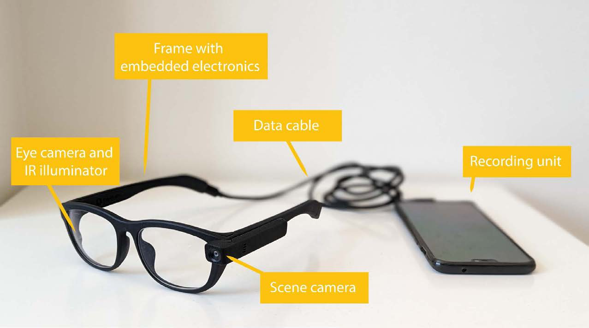
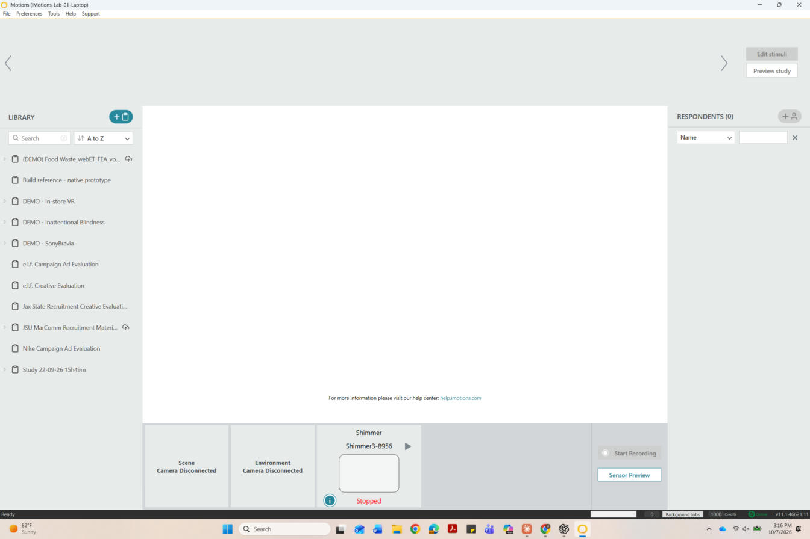
By the end you should be able to write a comparison sentence and testable hypotheses for a shelf study, defend a between or within subjects design, build a Glasses study with the Neon selected, run a field day with a fit check and a session log, move recordings from the phone into iMotions, map gaze onto a reference image and draw areas of interest, run the primary test and report the effect size, and write results and discussion paragraphs that say no more than the data support.
From idea to research question
A client rarely arrives with a research question. A client arrives with a business question, a statement of what the business wants to happen: more shoppers should notice our brand, the new display should earn its cost. The iMotions design guide asks you to begin there and to dig below the brief rather than take its wording at face value, because the business question decides what is worth measuring. Sensodyne's brief in the sample report is the example: the brand had created new point of sale material for the shelf and wanted to understand how it changed the shopper's experience at the shelf, and how that experience differed when the material was absent. That names a wish and a comparison, but not who will be observed, what will be measured, or what would count as a difference.
A research question identifies the main problem you aim to answer and signals the type of study you need. A hypothesis is a testable answer to that question, and it includes the specific variables that will be tested. The guide is explicit about the order: hypotheses are generated before the study is designed and before any data are collected. Writing the expected answer down first forces you to say what you would accept as evidence, and it protects you from confirmation bias, the tendency to see what you expected and to explain away what you did not. The guide allows exploratory studies in commercial settings, with the same warning attached.
The lab asks every study to pass through one sentence before anything is built. The sentence has four parts: who (the population), sees what (the stimuli and conditions), measured how (the sensor and the metric), and compared against what (the other condition, a baseline, or a benchmark). For the shelf study the sentence reads: regular buyers of dental care products (who) shop an oral care shelf either with or without the Sensodyne wing point of sale material (sees what) while the glasses record where they look, from which we compute how soon and how long they look at Sensodyne products (measured how), and we compare the two shelf layouts (against what). If you cannot fill all four slots, you do not yet have a study.
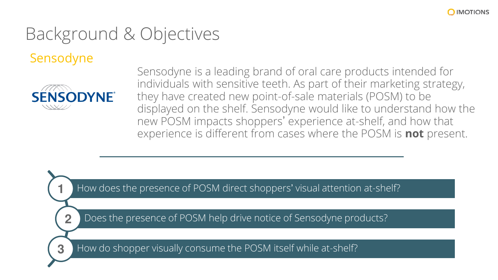
The variables are the objects that will be manipulated and measured. What you change is the independent variable; what you measure in response is the dependent variable. In the shelf study the independent variable is the shelf layout, with two levels, POSM and No POSM. The dependent variables are the attention metrics: the time to first fixation (TTFF) on Sensodyne products, which is how many seconds pass from the moment the shopper reaches the shelf until the first fixation lands inside the Sensodyne area of interest (AOI), a named region drawn on the shelf image; the dwell time, the total time spent looking inside that region; and the respondent ratio, the percentage of shoppers who looked at the region at all. The guide adds a distinction that matters later for the statistics: a variable is discrete when it can only be counted (how many shoppers noticed the wing) and continuous when it can take any value on a scale (seconds until the first fixation). TTFF and dwell time are continuous; the respondent ratio comes from a yes or no count.
Most weak questions fail in one of three ways, and each can be repaired step by step. The first is an opinion: "Do shoppers like our new shelf display?" Liking is not something the glasses measure, so the repair replaces the feeling with an observable, "Do shoppers notice Sensodyne products sooner when the wing is on the shelf?", and then adds the measure and the comparison: "Is TTFF on Sensodyne products shorter at the POSM shelf than at the No POSM shelf among regular dental care buyers?" The second is too general: "What do people look at in the store?" Everything is the answer, so nothing is testable. The repair narrows the place and the regions: "Which of six named shelf regions receives the largest share of fixation time, and does that share change when the wing is present?" The third is missing its what and how: "Does POSM work?" The repair names the mechanism and the metric: "Does the wing raise the percentage of shoppers who fixate Sensodyne products, and shorten the time until they do?" The iMotions table below gives the same contrast in general form: good questions are specific, measurable, and name their variables; bad questions are general, opinion based, or lack a what or a how.
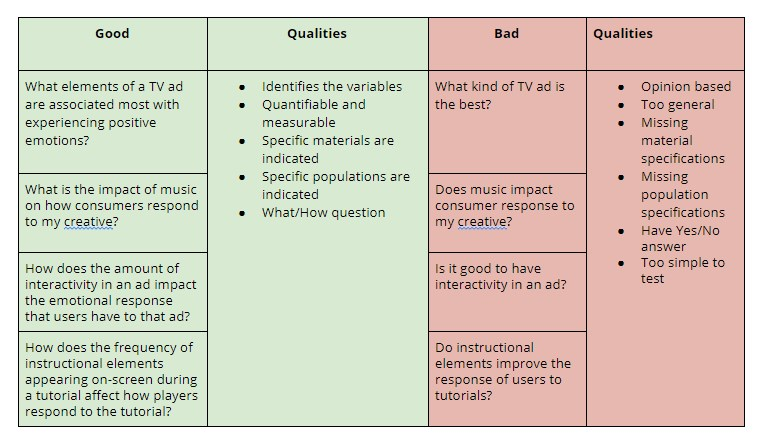
The iMotions guide warns against fishing expeditions in its own words: biometric measures are granular enough that you can almost always find some result, but without a specific question that result may be due to random chance. A glasses recording yields dozens of metrics for every region of every shelf for every shopper. If you test all of them and report the ones that came out significant, you will publish noise.
The warning has a research literature behind it. Simmons, Nelson, and Simonsohn showed that ordinary, defensible choices made after looking at the data (which measure to report, when to stop collecting, which participants to drop, which covariates to add) can raise the false positive rate of a study from the nominal five percent to well above fifty (Simmons, Nelson, & Simonsohn, 2011). The remedy is to make those choices before the data exist and to write them down where they cannot quietly change. That is the idea behind preregistration, a time stamped record of the hypotheses, the sample size, the exclusion rules, and the analysis plan, filed before data collection, so that a reader can tell a prediction from a story told afterward (Nosek, Ebersole, DeHaven, & Mellor, 2018). For a class project the record can be a dated document in the study folder; for a publication it can be a public registry. Either way, section 02 will ask you to write the sample size, the exclusion rule, and the AOI list before the first shopper, and section 08 will hold you to them.
You also need to know what attention metrics can and cannot answer before you promise anything. They answer where (which region), when (how soon), how long (dwell), how often (revisits), and in what order. They do not answer why. A long dwell on a price tag can mean interest, confusion, or surprise at the number, and the recording looks the same in all three cases. Reading a mental state directly off a physiological signal is called reverse inference, and consumer neuroscience reviews warn that it is the easiest mistake in the field (Plassmann, Venkatraman, Huettel, & Yoon, 2015). That is why the sample study, and yours, pair the glasses with a short survey: the glasses say what was looked at, and the shopper says what she remembers, intends, and chose.
Now the worked example. The sample report lists three questions on its second page. Question 1 asks how the presence of POSM directs shoppers' visual attention at the shelf. Question 2 asks whether the presence of POSM helps drive notice of Sensodyne products. Question 3 asks how shoppers visually consume the POSM itself while at the shelf. Each becomes a hypothesis once the variables are named. H1, from question 1: shoppers at the POSM shelf fixate Sensodyne products before competitor products more often, and spend a smaller share of their shelf time on competitor products, than shoppers at the No POSM shelf. H2, from question 2: time to first fixation on Sensodyne products is shorter at the POSM shelf, and the percentage of shoppers who fixate them is at least as high. H3, from question 3, which concerns the POSM group only: most shoppers who see the wing fixate all three of its elements (the product image, the main message, and the sub message), and the product image receives the longest looking time. H3 is descriptive rather than a comparison between groups. That is allowed, as long as it is written in advance and reported as a description, not dressed up afterward as a test.
Each hypothesis commits to a direction and a metric: H1 an order and a share, H2 a time and a ratio, H3 a pattern across three regions. Prior work gives reasons for the directions: in-store signage attracts attention at the point of purchase (Otterbring, Wästlund, Gustafsson, & Shams, 2014), and merchandise displays draw and hold the eye in ways that ordinary shelf stock does not (Huddleston, Behe, Minahan, & Fernandez, 2015). A hypothesis grounded in a reason is also one you can learn from when it fails.
Help center: Designing Your Research Study
Turn a business question into a one sentence comparison, name the independent and dependent variables, repair a weak question, and write three hypotheses before any data exist.Turning the question into a study
A design is the set of decisions that make a comparison fair: who sees which condition, what is held constant, what the shopper is told, how many shoppers there are, and what is written down before the first one arrives. The first decision is how to allocate people to conditions. In a between subjects design each participant is assigned to only one level of the independent variable, so one group sees the POSM shelf and a different group sees the No POSM shelf. In a within subjects design every participant experiences all conditions. The iMotions design guide lays out the trade: between subjects sessions are shorter but need more participants; within subjects studies cost less and have less error from personality and mood, because each person serves as his or her own control, but participants tire, and the order of conditions can itself change the results.
For a real shelf the choice is nearly forced. The wing cannot be removed while the shopper stands there without telling her what the study is about, and a second visit later the same day does not help, because by then she knows where Sensodyne sits and the first visit has changed the second. That carryover is what a within subjects design must avoid, and here it cannot. The sample report lists fifteen shoppers and two shelf layouts without stating how they were allocated; this workshop treats the study as between subjects, and the simulated data set in section 03 is built that way, with fifteen shoppers per shelf. Within subjects becomes possible when the two versions are physically separate, such as two end caps in different aisles or a lab shelf restocked while the participant waits behind a screen. Then the order is balanced: half see the POSM version first and half second, so that practice and fatigue cancel out when the groups are combined. The guide calls this counterbalancing, and the order each participant received must then be recorded as a variable.
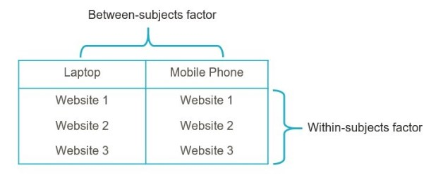
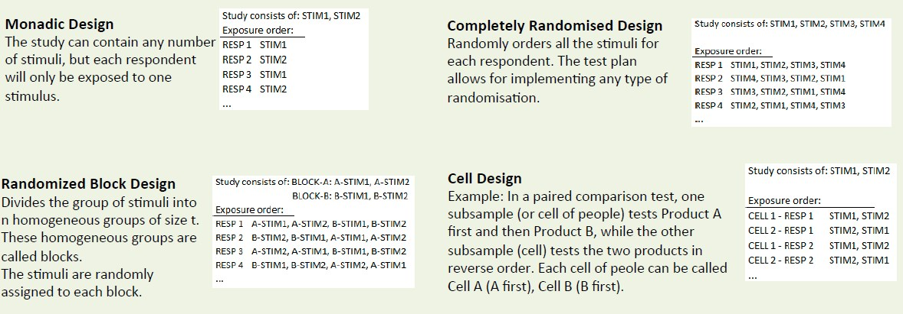
The second decision is what to hold constant. A comparison between two shelves is a comparison of the wing only if everything else is the same: the same shelf in the same aisle, the same lighting and time of day band, the same stock and facings (the planogram, the diagram of what sits where), the same price tags, the same operator script. If the POSM shelf also happened to be fuller, or better lit, or visited in the morning while the other was visited at closing time, the measured difference belongs to a mixture of causes that no statistic can separate later. The iMotions design guide illustrates the rule with a question about music in a creative: the good design holds the visual constant across six music versions, the less optimal design varies several factors at once. Change one thing.
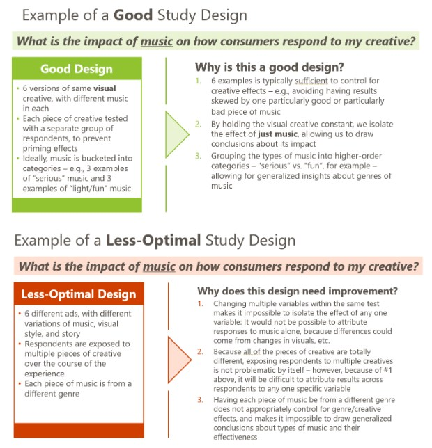
The third decision is the task instruction, and it matters more than beginners expect. The sample report tells the shoppers to explore the oral care shelf as if they were naturally shopping for oral care products, and then to purchase a product. Every word is doing work. "As you normally would" asks for the ordinary browsing the client cares about; a search instruction ("find the Sensodyne") would force attention to the brand and erase the comparison, while a free look with no goal produces wandering that resembles no real shopping trip. "Then choose one product" gives a behavioral outcome, the product chosen, that can be paired with the attention data. The instruction must not name the brand, the wing, or the purpose, because a participant who guesses what the researcher hopes to see tends to supply it. That distortion is a demand effect, and the design guide's rule on consent, to inform participants without priming them with critical information about the expected outcome, applies to the instruction as well. Prepare the instruction in writing in advance, read it the same way to every shopper, and keep it to the sentence above.
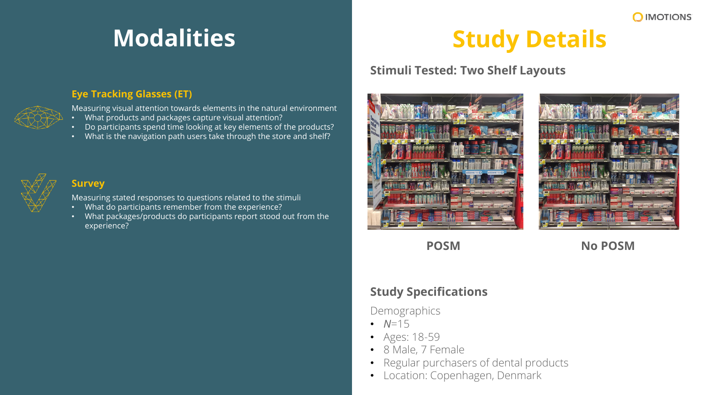
The fourth decision is how many shoppers. The honest answer depends on two ideas. The effect size is how far apart the two group means are, measured in units of the spread within the groups; the iMotions guide defines it as a value that quantifies the magnitude of the difference between two group averages. The common version is Cohen's d: the difference between the means divided by the standard deviation. A d of 0.2 is conventionally small, 0.5 medium, and 0.8 large (Cohen, 1992). Statistical power is the probability that your study will detect an effect of a given size if that effect is real; the usual target is 80 percent. Power rises with the sample size and with the effect size, and falls as the data get noisier. A study with low power that finds nothing has learned almost nothing, and a study with low power that finds something tends to overstate how large the effect is.
Suppose the wing really does shorten the time to first fixation on Sensodyne by a large amount, about four fifths of a standard deviation. How many shoppers per shelf would give you an 80 percent chance of seeing that difference as significant at the usual threshold? Twenty six per shelf, fifty two in all. If the true effect is only medium, the number more than doubles to sixty four per shelf. Fifteen in total, split across two shelves, has power to find only very large effects, so the sample study is best read as a commercial pilot that shows the method and the direction, not as a confirmatory test.
G*Power is the free program most researchers use for this a priori calculation, and it is cited in the method as software (Faul, Erdfelder, Lang, & Buchner, 2007). Cohen's power primer tabulates the same answers: 26 per group for a large effect and 64 for a medium one at this alpha and power (Cohen, 1992). When you report the result, give d with its confidence interval, because a sample this small estimates the effect imprecisely even when the test is significant (Lakens, 2013). If the analysis will model several AOIs per shopper at once, the number of regions per person also matters, and a mixed model tutorial shows how to plan for it (Brysbaert & Stevens, 2018).
Two practical rules follow. First, the iMotions guide recommends 20 to 60 people in each study condition for adequate power, and the lab's own planning convention for a glasses study is 20 to 30 usable recordings per condition. Second, recruit 20 to 25 percent more than the usable target, because glasses studies lose recordings to a poor fit, bad lighting, a shopper who turns away from the shelf, or a phone that stops; 26 usable per shelf means scheduling about 32. Decide the exclusion rule now as well: the simulated study in section 03 drops any recording with less than 70 percent valid gaze data, and that threshold was written before collection, which is the only time it can be written without bias.
The fifth decision is what to record about each shopper. A respondent variable is a fact about the participant stored with the recording so that it can be used later to compare or filter: an anonymous ID (P01, P02, never a name), the condition (POSM or NoPOSM), the order if the design is within subjects, an age band, gender, whether the person regularly buys the category (the sample report screened for regular purchasers of dental products), whether the person wears corrective lenses, how familiar the person is with the store (familiarity changes how shoppers navigate (Otterbring, Wästlund, & Gustafsson, 2016)), the session date, and the operator. iMotions stores name, age, gender, and group with each respondent, and section 04 shows where; everything else goes in the session log.
The sixth decision is the AOI master list, written before collection and used unchanged for both shelves. An area of interest is a measurement decision: the metrics exist only for the regions you draw, so the regions must come from the hypotheses. For the shelf study the list is Sensodyne_Products, Sensodyne_POSM_Wing (POSM shelf only), Competitor_A, Competitor_B, Price_Tags, and Shelf_Other, with the same names and the same boundaries on both layouts. Draw each region a little larger than the object, because no tracker is perfect and a fixation that lands just outside a tight boundary is lost; the size of that margin should follow the tracker's accuracy, and small elements such as the wing's text lines are the ones most at risk (Orquin, Ashby, & Clarke, 2016). The iMotions AOI article says the same thing in one line: decide the AOIs and the metrics before data collection.
The seventh decision is the reference image, one still photograph of each shelf layout onto which every shopper's gaze will later be projected. That projection is called gaze mapping, and sections 06 and 07 explain it; what matters now is that it works only if the photograph is good. The iMotions guidance is that the image should be well lit, sharp, not warped, with clear contrast, and should show the objects as they appear in the recording. Take it straight on, in the store's own light, before the first shopper, and take it again if a single facing moves. The three photographs below show the rule: the tilted one and the dark one are rejected, the straight and evenly lit one is accepted.
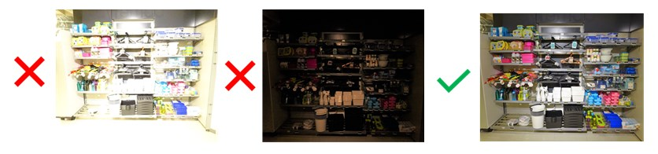
The scene camera records whatever the shopper faces, which in a store includes other shoppers and staff who did not agree to anything. The iMotions glasses guide says plainly that an in-store study may need explicit permission from the store and that other people may not want to be recorded. Get the store's permission in writing, tell the wearer that bystanders will appear in the video, and plan to blur faces before any recording leaves the lab (section 05 shows the button).
What the shopper agrees to is informed consent: a documented explanation, given before participation, of the purpose of the study, that participation is voluntary and can be withdrawn at any time, the participant's rights, how the data will be handled and stored, and the possible risks. The iMotions consent FAQ lists exactly those five items and recommends sharing the study information at recruitment and having the form signed on the day. The design guide adds that consent must inform without priming: say that the study is about shopping and attention, not that it is about the wing. Gaze and scene video are more revealing than they look, since what a person looks at can indicate interests, health, and identity, which is why the recordings deserve the same care as medical data (Kröger, Lutz, & Müller, 2020). Consumer neuroscience ethics turns on the same points: participants must understand what is recorded, results must not be used to manipulate vulnerable people, and claims must stay within what the method supports (Stanton, Sinnott-Armstrong, & Huettel, 2017). The Neuromarketing Science and Business Association code of ethics sets out the consent, privacy, and participant rights articles that commercial studies are expected to follow (Neuromarketing Science & Business Association, n.d.).
At Jacksonville State every study that will be published or presented goes through the Institutional Review Board (IRB), the university committee that reviews research with human participants before it begins. Use the lab's consent template, submit the protocol with the instruction script and the survey, and when the approval letter arrives file it, with the protocol number, in the study's 00_Admin folder, because the methods section and the journal will ask for it. Finally, run a pilot: two people end to end, from consent through export, before you recruit anyone, so that the measures you promised come out of the software the way you planned.
Help center: Designing Your Research Study · Help center: Using a test plan for study design · Help center: Respondent informed consent and data privacy FAQ
Choose and defend between or within subjects for a shelf, hold the right things constant, write a non priming instruction, explain effect size and power and read a G*Power result, and list the respondent variables, AOIs, reference images, consent, and IRB steps that must exist before the first shopper.The worked example in full
Everything from sections 01 and 02 fits on one page, and writing that page is the first deliverable of any study in this lab. Below is the Sensodyne shelf study written as a student study plan. Where the sample report gives a fact, the plan uses it and says so; where the report is silent (the allocation of shoppers to shelves, the exclusion rule, the statistical tests), the plan fills the gap with the decisions a student would have to make, and the simulated data set follows those decisions. Read it as a template: replace the brand, the regions, and the numbers, and you have the plan for your own study.
- Question
- Does new point of sale material for Sensodyne change where shoppers look at an oral care shelf, how soon they notice Sensodyne products, and how they look at the material itself? (The report's three questions, page 2.)
- Hypotheses
- H1: at the POSM shelf, shoppers fixate Sensodyne products before competitor products more often and spend a smaller share of shelf time on competitors. H2: time to first fixation on Sensodyne products is shorter at the POSM shelf and the respondent ratio is at least as high. H3 (POSM group only, descriptive): most shoppers fixate all three wing elements, and the product image receives the longest looking time.
- Design
- Between subjects, one factor (shelf layout) with two levels. Each shopper visits one shelf once. Random assignment to shelf by a list prepared before the field day.
- Conditions and controls
- POSM: the shelf with the Sensodyne wing mounted. No POSM: the same shelf without it. Same aisle, same stock and facings, same price tags, same lighting and time of day band, same operator script.
- Stimuli
- Two shelf layouts (the report's "Stimuli Tested: Two Shelf Layouts"). One reference photograph of each layout, taken straight on in store light before the first shopper.
- AOIs
- Sensodyne_Products, Sensodyne_POSM_Wing (POSM layout only, with three child regions: product image, main message, sub message), Competitor_A, Competitor_B, Price_Tags, Shelf_Other. Drawn on the reference images with a margin; the list is final before collection.
- Sample
- The report: N = 15, ages 18 to 59, 8 men and 7 women, regular purchasers of dental products, Copenhagen, March 2020. The simulated version: 30 shoppers, 15 per shelf, so that the statistics of section 08 have something to work with; a confirmatory study would plan 26 per shelf and recruit 32.
- Task
- Explore the oral care shelf as you normally would when shopping for oral care products, then purchase a product (the report's instruction). Glasses off after the purchase; questions answered afterward; then the survey.
- Measures
- Eye tracking: time to first fixation on each AOI, time spent (dwell time) in each AOI, percent of shoppers who fixated each AOI (respondent ratio), and the navigation order in which AOIs were first fixated. Survey: purchase intent for Sensodyne on a 1 to 7 scale, unaided brand recall, and the product chosen.
- Analysis plan
- Exclude recordings with less than 70 percent valid gaze data. Primary test: Welch's t test on TTFF for Sensodyne_Products between shelves, with Cohen's d and its 95 percent confidence interval. Secondary: dwell share on Sensodyne_Products; combined competitor dwell; a mixed model of dwell share across AOIs with a random intercept per shopper. Survey: t test for intent, exact tests for recall and choice. All two tailed at alpha = .05.
- Deliverables
- Heat maps and navigation paths per shelf, an AOI table by condition, three figures, a results section and a discussion in journal form, and a client executive summary.
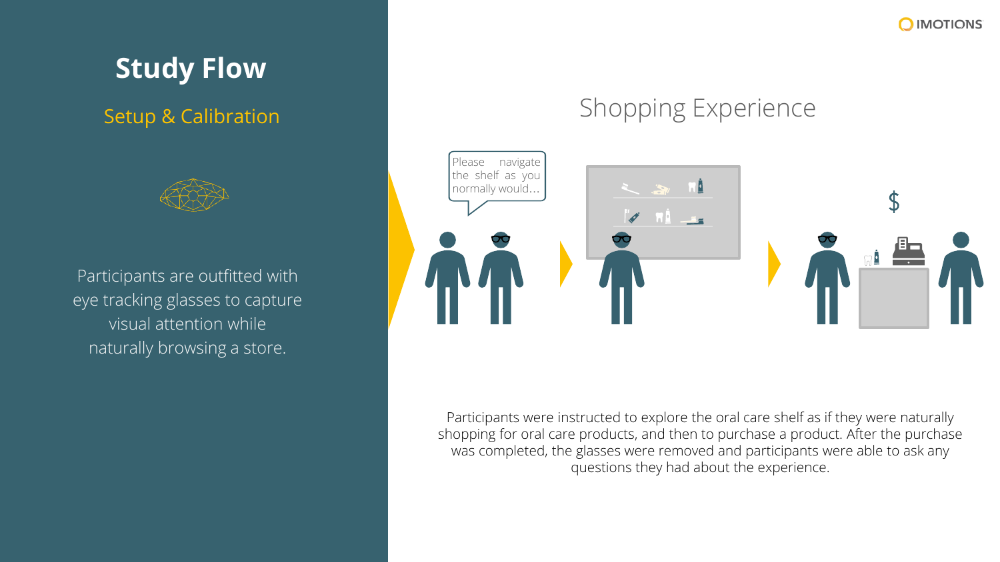
The measures deserve a closer look, because the report and the software use different words for the same things. The report's deliverables page defines three AOI numbers: Looking Time, Time to Notice, and Percent to Notice, plus heat maps and numbered navigation paths. In iMotions the same quantities appear under the names of the AOI Metrics article: Looking Time is dwell time, the total time the gaze or the fixations spent inside the region; Time to Notice is TTFF, the time from the start of the interval until the first fixation inside the region, where a fixation is a period of a few hundred milliseconds during which the eye rests on one spot; and Percent to Notice is the respondent ratio. The standard handbook of eye tracking measures gives the formal definitions and the alternatives, and it is the book to cite when a reviewer asks what "dwell" means (Holmqvist et al., 2011). A heat map is a color overlay showing where attention concentrated across all shoppers, red for most and transparent for none; it is a picture, not a number, and the report uses it to show, not to test. A navigation path is the numbered order in which regions were first looked at, averaged over shoppers; the report's path figures are what H1 is about.
Each hypothesis has its measure, and the pairing is the heart of the plan. H1 is tested by the navigation order (which region came first) and by the share of dwell time on competitors. H2 is tested by TTFF on Sensodyne_Products, the primary outcome, with the respondent ratio as a check that the shorter time is not an artifact of fewer people looking. H3 is described by the respondent ratio and the dwell time for each of the three wing regions in the POSM group. The survey adds purchase intent and recall, which no gaze metric can supply. One more measurement decision belongs here: the shelf interval. A shopper's recording starts before she reaches the shelf and ends after she leaves it, so every metric must be computed over the segment from arrival at the shelf to the moment the chosen product is in hand. An in-store glasses study of decision making describes shelf visits as an orientation phase, an evaluation phase, and a verification phase, which is a useful way to decide where the segment starts and ends (Gidlöf, Wallin, Dewhurst, & Holmqvist, 2013). In iMotions that segmentation is done with the gaze mapping interval and annotations, in section 07.
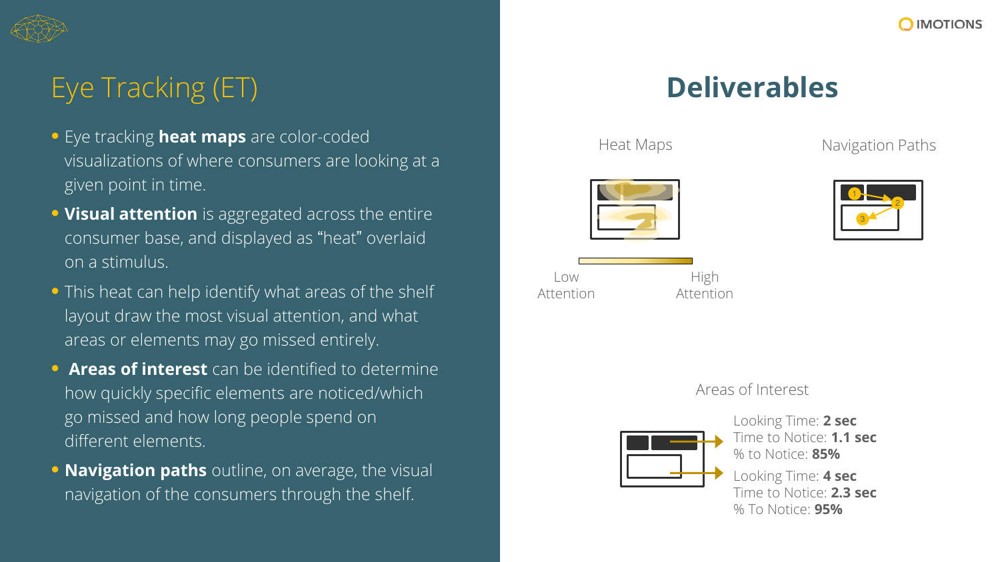
Why keep the survey if the glasses already show what shoppers looked at? Because the two measure different things, and the client's question needs both. Physiological and behavioral measures capture the response in the moment, before the shopper has had time to rationalize it; self report captures what the shopper remembers, believes, and intends after the fact, and lets her say why. Reviews of consumer neuroscience methods recommend exactly this pairing rather than either alone, because each corrects a weakness of the other (Bell et al., 2018), and plain language overviews written for marketing researchers say the same (Harris, Ciorciari, & Gountas, 2018). The sample report's self report page makes the practical case: in shopper testing the survey covers intent to purchase, likeability, and recall, and some researchers also watch the live signals during the visit and then probe the shopper with specific questions afterward. H2 can be true and purchase intent can still be flat; without the survey you would never know.
The sample report gives a handful of figures: time spent on competitor products falls from 127.9 seconds without POSM to 94.3 seconds with it, almost 25 percent less; all shoppers explored every element of the wing; the product image was noticed first, after 28 seconds in the context of the whole shelf, and received 1.1 seconds of looking time against 0.3 for the main message and 0.2 for the sub message. It does not publish per shopper data, standard deviations, or tests. So the workshop uses a SIMULATED data set built to mirror the report's design and the direction of its findings. Every number from that set is labeled simulated, and none may ever be quoted as a finding about real shoppers.
The simulated set has three files in the site's data folder, all generated by one script (make_simulated_data.py, seed 20261037) and all carrying a first line that says so. SIMULATED_shelf_study_AOI_metrics.csv holds one row per shopper per AOI, 165 rows for 30 shoppers: five shared regions each plus the wing for the fifteen POSM shoppers. Its columns copy the iMotions Individual AOI metrics export: Study Name, Respondent Name (P01 to P30), Gender, Age (a band), Group (POSM or NoPOSM), Session Date, Stimulus (Shelf_POSM_GazeMap or Shelf_NoPOSM_GazeMap, the gaze mapped reference images), AOI Name, Stimulus duration, AOI duration in milliseconds and percent, Valid data, Gaze Hit time parent, Gaze Dwell count, Gaze Dwell time, Dwells with fixations, Revisit count, Fixation count, TTFF AOI, TTFF parent, TTFF max., Dwell time in milliseconds and percent, Fixation duration, and First fixation duration. Section 06 defines each of these. SIMULATED_shelf_study_survey.csv holds one row per shopper: Purchase_intent_Sensodyne_1to7, Brand_recall_Sensodyne (Yes or No), and Product_chosen. SIMULATED_shelf_study_session_log.csv is the field log: Respondent Name, Session Date, Operator, Group, Shelf exposure in seconds, the gaze check note, Valid data percent, Data complete, and a Decision note. One row, P17, carries the note that the glasses slipped at about 40 seconds and that valid data fell to 46 percent, below the 70 percent rule, with the decision EXCLUDE; section 08 shows what to do with it. The valid data percent is the share of expected gaze samples that were actually obtained; anything below 100 means missing data.
The lab also has a real Neon store study, and the instructor opens it in class as the live demonstration of everything the simulated files stand in for. In the Library it is called "Study 22-09-26 15h49m", the default timestamp name iMotions gives a study that nobody renamed, which is itself a lesson for section 04. It is a Glasses live recording study with Neon Glasses selected, holding 42 recordings named by their timestamps (for example 2026-09-15-10-45-20) under the stimulus "Neon Glasses", plus one reference image, "Store Shelf Clean". Under the study sit two analyses, where an analysis in the iMotions sense is a named selection of respondents and stimuli on which replay, gaze mapping, AOIs, and exports are performed: "Store Customers - 26 Usable Clips", with the 26 recordings that passed the lab's quality screen, and "Study 22-09-26 15h49m-1". Forty two recordings in, twenty six usable: that ratio is the practical reason section 02 told you to recruit extra.
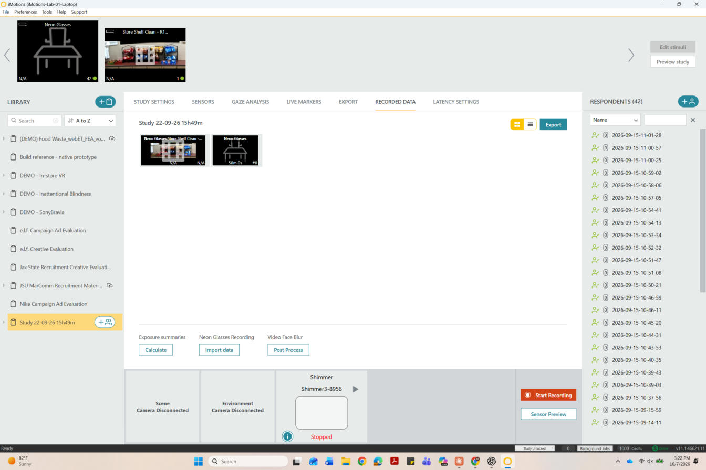
Building the study in iMotions Lab 11.1
The Study Builder is where the design becomes a container that recordings can go into, and the best way to learn it is to see each screen as a question the design has already answered. What kind of study is this? A glasses study. How will the glasses talk to iMotions? Through files imported after the field day. Which sensors? The Neon, and nothing that is not attached. What is it called? Something you will recognize in a year. The wizard asks those four questions in that order, and the study that results has a handful of tabs that hold the settings you will need to report. Nothing here records data; that is section 05. Use the lab laptop, because its license key (0001) is the only one in the lab with the Eye Tracking Glasses module, and the desktop will not show the Glasses tile.
One rule governs the whole section: the Neon is chosen inside the study, not in the program's global preferences. On the lab laptop, Preferences > Global Settings (Alt+G) > Eye tracking is the page for screen based trackers; it holds an "Eye Tracking Server" checkbox, a Model box that currently reads Mouse Simulator, and the calibration settings for a screen tracker, and the Neon does not appear on it. The Sensors tab of Global Settings has no Neon or Pupil Labs section either. For the import route that this workshop recommends, the help center says in so many words that the Global Settings steps are not necessary. (For a live recording over Wi-Fi the help center does describe enabling the server and selecting Neon Glasses on that tab; whether that choice appears on the lab laptop once the phone is on the same network must be verified on the lab machine.)
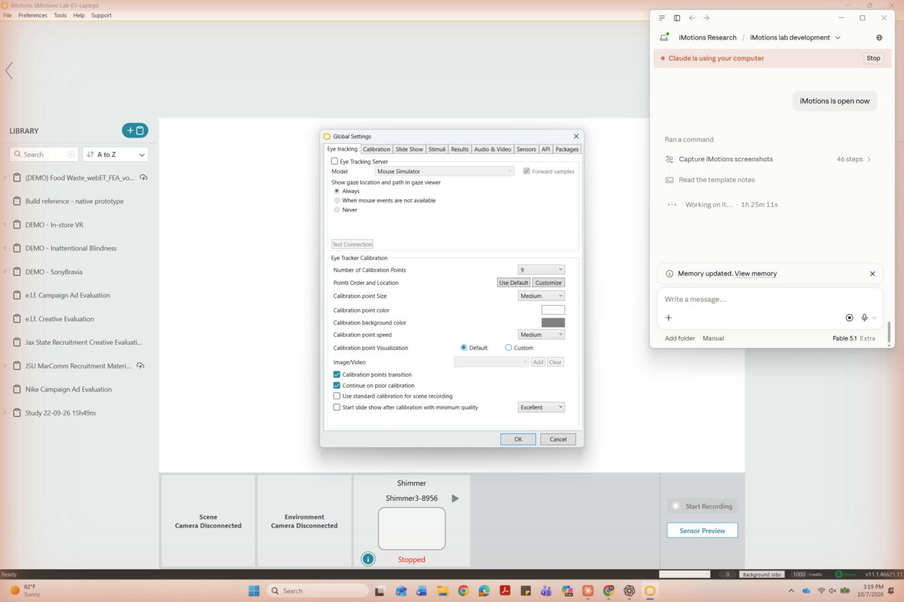
Here is the wizard, screen by screen, with the names as they appear on the lab laptop. Where the help center uses different wording, the laptop's wording is given first.
- Open the wizard. In the Library panel click the "+" button next to LIBRARY, or press Ctrl+N (confirmed on the lab laptop on October 7, 2026). You should see a dialog titled "Create a new study" asking "What kind of study are you planning to do?", with seven tiles: Screen-based, Remote Data Collection, Glasses, Screen-free recording, Mobile device, Smart Eye Pro, and Test Plan, a "Study builder help" link at the top right, and Cancel and Next at the bottom. The help center's picture of this dialog shows eight tiles, including Virtual Reality; the lab license shows seven. Common mistake: picking Screen-based because it is first. Inside this wizard the Escape key goes back one page rather than canceling.
- Choose the study type. Click Glasses, then Next. You should see "Select glasses type" with the question "How will your glasses connect to iMotions?" and three tiles: Glasses live recording, Sensor Sync for Glasses, and Import glasses data. Glasses live recording means iMotions starts and stops the Companion app over Wi-Fi and records other sensors on the same timeline. Sensor Sync for Glasses means the app records the glasses while iMotions records everything else, and the two are merged afterward with a counter stimulus. Import glasses data means the app records on its own and the files are imported later. For a first field study choose Import glasses data: nothing depends on a network, and a store's Wi-Fi is usually firewalled against device to device traffic. Choose Glasses live recording in the lab, where the lab's own router can hold the laptop and the phone on one network. Common mistake: choosing live recording in a store and losing the session when the connection drops.
- Select the sensors. Click Next. You should see "Select sensors" with the question "Which sensors do you want to use to collect data for this study?" and a grid of tiles. Open the dropdown inside the Eye tracking tile: it lists Tobii Glasses 2, Tobii Glasses 3, Pupil Invisible Glasses, and Neon Glasses. Choose Neon Glasses. The Environment camera and Shimmer tiles are already highlighted in yellow because those sensors are enabled in Global Settings, and iMotions auto selects any sensor that is enabled there; click each to uncheck it unless the study will actually use it. The note at the foot of the page says that selecting a sensor means iMotions will collect its data if available, and that each selected sensor must be connected and configured in Global Settings. You should see "Neon Glasses" in the Eye tracking box and Next enabled. Common mistake: choosing Pupil Invisible Glasses, which is the previous Pupil Labs model and the wrong name that the lab's older procedural manual used; the lab's glasses are Neon.
- Name the study. Click Next. You should see "Name your study" with a name field holding a default such as "Study 07-10-26 15h16m", a notes box, Back, and a "Create study" button. (For the Import glasses data route the help center describes an extra page first, where you choose "New study" or "Merge into existing compatible study" and then browse to the import folder; that branch was not opened on the lab laptop and should be verified there.) Replace the default with the lab's naming convention, YYYY_Client_Topic, for example 2026_Sensodyne_ShelfPOSM, and paste the one sentence comparison and the AOI master list version into the notes. Click Create study. You should see the study in the Library and, in the stimulus strip across the top, a single box labeled "Neon Glasses"; the help center notes that no other stimuli can be added to a glasses recording. Common mistake: keeping the timestamp name. The lab's real store study is called "Study 22-09-26 15h49m" for exactly this reason, and nobody can tell from the Library what it is.
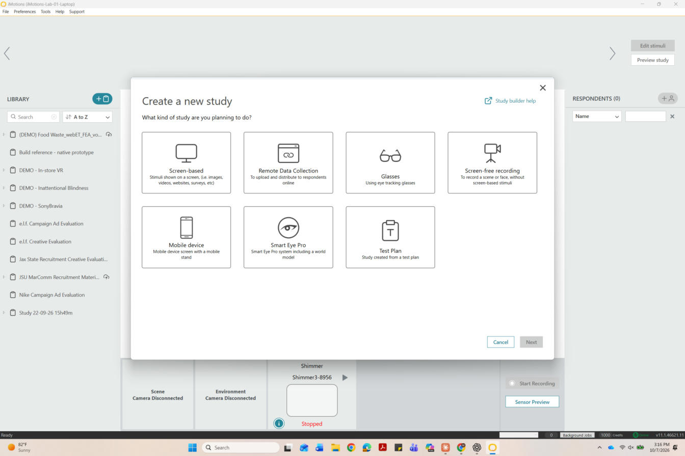
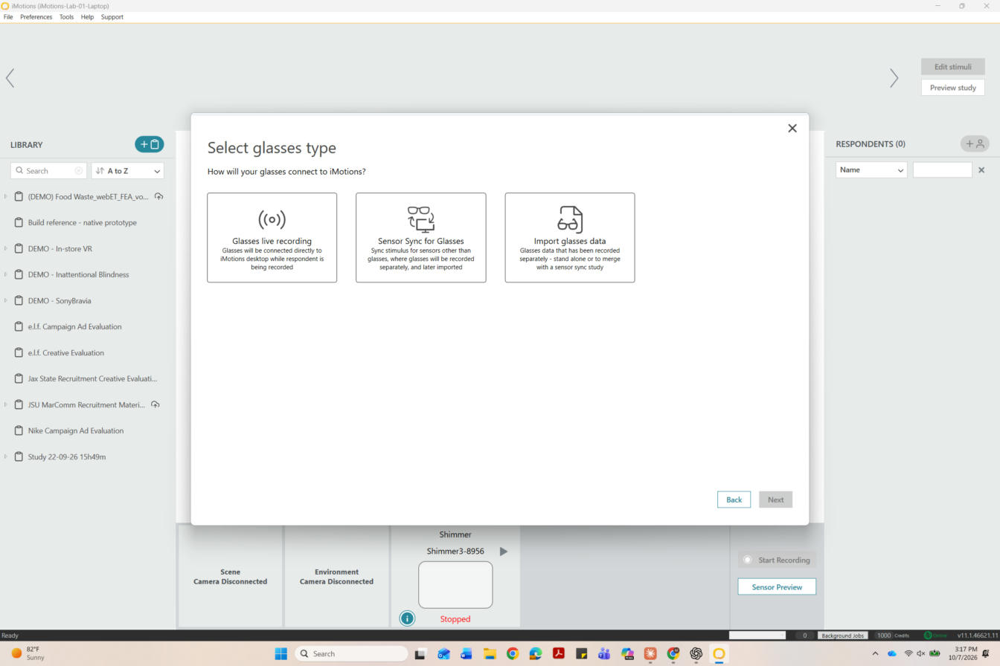
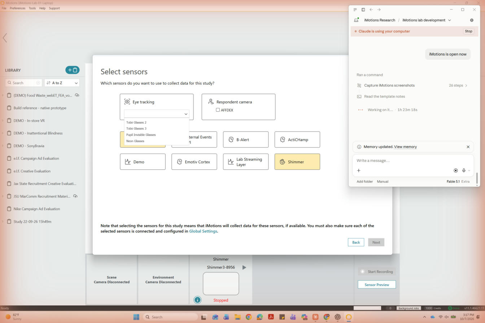
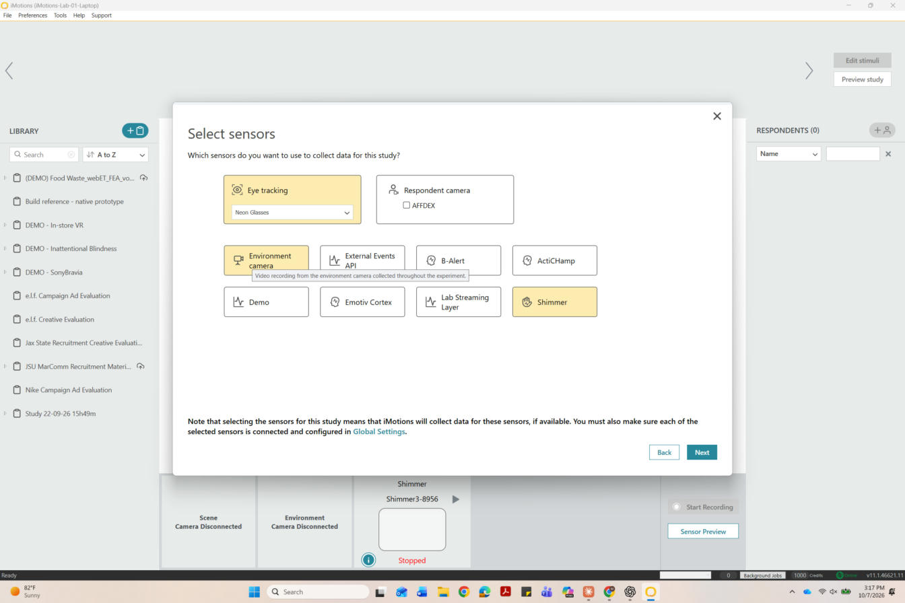
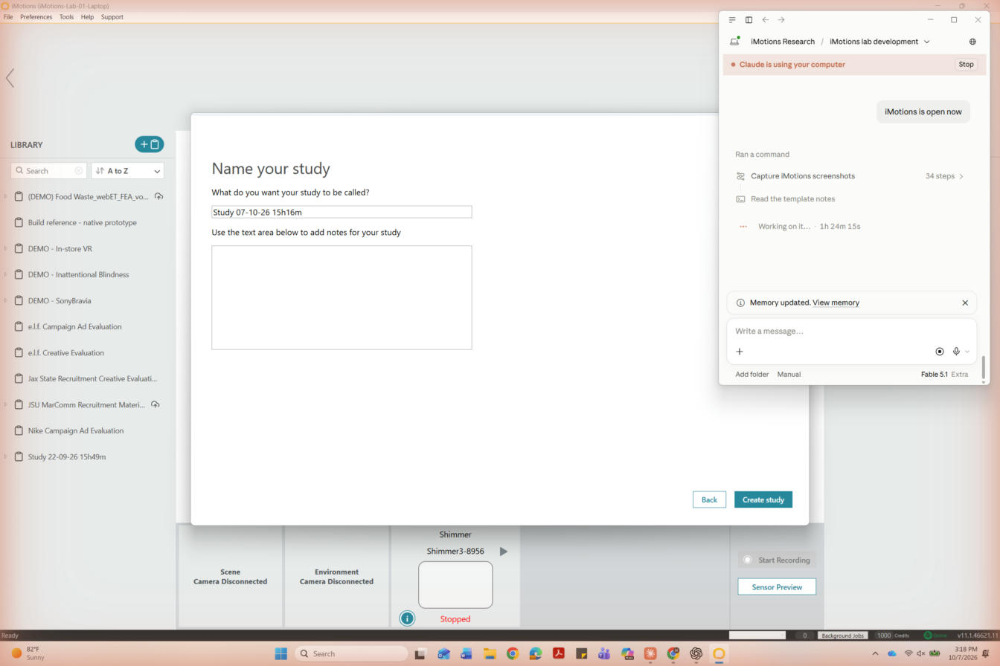
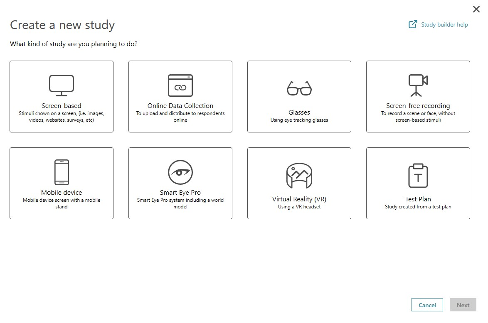
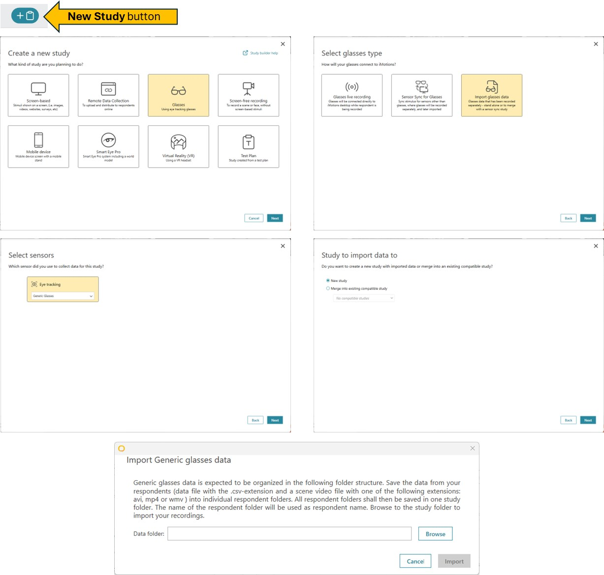
Once the study exists, click its name in the Library and look at the row of tabs above the work area: STUDY SETTINGS, SENSORS, GAZE ANALYSIS, LIVE MARKERS, EXPORT, RECORDED DATA, and LATENCY SETTINGS. Each one holds a decision you will report. STUDY SETTINGS carries the name and description, and for a glasses study the resolution and visual area are filled in automatically from the scene camera's specifications, calculated for a plane one meter away, which is what makes gaze angles computable. SENSORS shows what the wizard chose: on the lab's store study the Eye tracking box is checked with "Neon Glasses" and every other sensor is unchecked, with Undo and Update buttons for changes. LIVE MARKERS is where keyboard markers are defined for a live recording; an import study has no live markers because iMotions was not running during the recording, which is why section 05 uses spoken markers instead. EXPORT is where the sensor data and metric exports are produced once recordings exist. RECORDED DATA lists each respondent's recording with its sampling rate and data percentage, and holds the Import data button for the Neon files. LATENCY SETTINGS corrects a lag between video and data, which matters mainly for live recordings over a network.
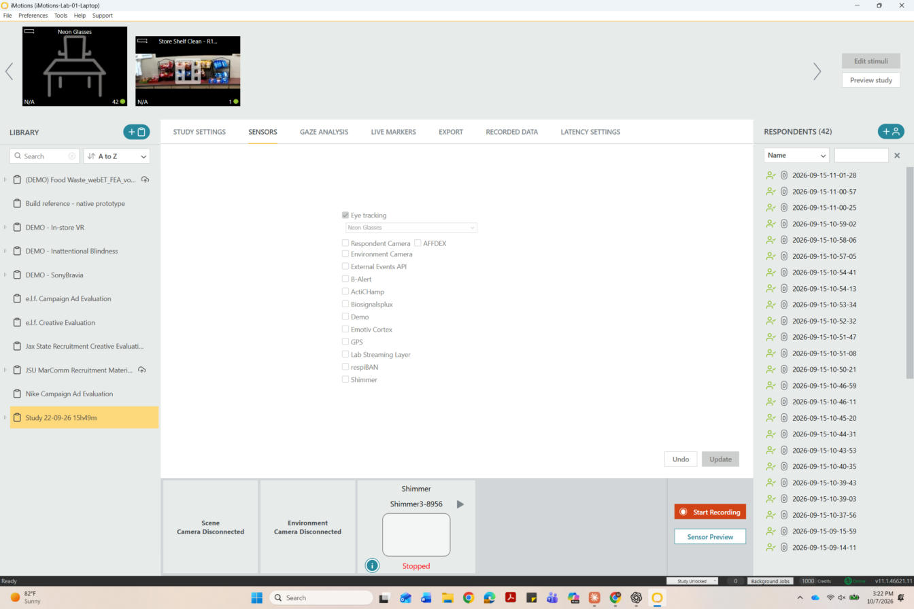
GAZE ANALYSIS is the tab students most often misread. Despite its name it does not launch an analysis; it is the page for the fixation filter, the algorithm that turns the stream of raw gaze samples into fixations and saccades, the rapid jumps between fixations. The lab's study uses the I-VT filter, the velocity threshold filter, which classifies each moment by how fast the eye is moving: slower than the threshold is a fixation, faster is a saccade. On the lab laptop the tab shows Fixation Filter "I-VT (fixations and saccades)" and these parameters: Window Length 20 ms and Velocity Threshold 30 degrees/second under Fixation Filter Parameters; Gap Fill-in (interpolation) checked with Max Gap Length 75 ms; Noise Reduction unchecked (Moving Average, Window Size 3 samples, grayed); Discard Short Fixations checked with Minimum Fixation Duration 60 ms; and Merge Adjacent Fixations checked with Max Time Between Fixations 75 ms and Max Angle Between Fixations 0.5 degrees. In brief: the window is the span of samples over which velocity is computed, so a shorter window reacts faster to a change in speed; the velocity threshold is the speed, in degrees of visual angle per second, that separates fixation from saccade; gap fill in interpolates across short losses of the gaze signal up to the maximum gap, and longer gaps become unknown; discarding short fixations removes candidate fixations shorter than the minimum; merging adjacent fixations joins two fixations separated by less than the time and angle given. Section 06 explains what a degree of visual angle is for a moving camera and what changes when you move each number. For now, two rules. Do not change these values between the two shelf conditions, because the filter is part of the measurement and a different filter makes the groups incomparable. And write the values into the study plan, because the methods section must report them.
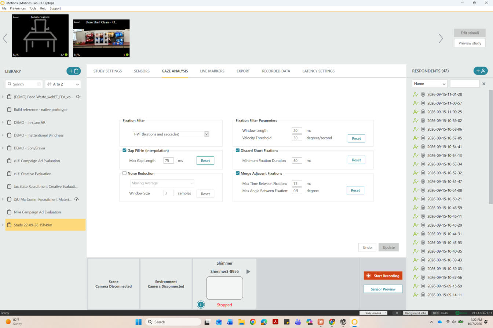
A glasses study has one stimulus, "Neon Glasses", and no flow of slides, so the shelf condition cannot be built into the study the way an A/B slide show would be. It is stored with each respondent instead. When you add a respondent (the "+" button at the top of the RESPONDENTS panel), the respondent details hold a name, an age, a gender, and a group; put the anonymous ID in the name and the condition (POSM or NoPOSM) in the group, and for a within subjects design put the order there too. The help center notes that respondent details can be adjusted at any time and used in later analysis. For an import study the respondent is created from the folder name during import, so set the folder names first (section 05) and fill in the group afterward on the RESPONDENT DETAILS tab; the exact field labels on that tab should be verified on the lab machine.
Last, back up the empty study before the field day and the full study after it. Right-click the study in the Library and choose Save To File. The help center describes the options: exclude respondent and environment camera recordings, include analysis, and select the respondents to export. Save to a local drive first, because the help center warns that exporting straight to an external drive or a cloud folder can corrupt the file, then copy the zip to the study's 03_Collection folder before collection and to the archive after it. The zip holds study information, stimuli, collected data, respondents, and analyses, and File > Load Study From File brings it back on any computer with the same or a newer version of iMotions. Tools > Save all studies to file does the same for the whole Library. A study that exists in one place does not exist.
Help center: Using the iMotions Study Builder · Help center: Neon by Pupil Labs: Live Recording and Other Study Types · Help center: Using Eye Tracking Glasses with iMotions · Help center: Clone, Save, and Import iMotions Studies
Build a Glasses study on the lab laptop with the right glasses type and the Neon selected, name it by the lab convention, read each study tab, explain what the GAZE ANALYSIS parameters are, store the condition with the respondent, and back the study up.The field day
A field day is a sequence of small habits, and the recordings you get back are only as good as the weakest one. The order matters, so this section runs through the day in order: what is done before the first shopper, what happens with each shopper, how the files leave the phone, and how they arrive in iMotions. The iMotions glasses guide's first instruction is the one to remember: before inviting any participant, pilot the whole protocol on yourself or a colleague, from fitting the glasses to exporting the data and answering the question, because that is the only way to find out where the plan breaks. A published field protocol for glasses in a real store follows the same sequence of consent, fitting, a gaze check, a natural shopping task, and a short survey (Wästlund, Otterbring, Gustafsson, & Shams, 2015).
Before the first shopper, four things are in place. The store's written permission and the IRB approval are in the folder. The reference photographs of both shelf layouts have been taken, straight on, sharp, in the store's own light, with the stock exactly as the shoppers will see it (section 02). The phone is charged, the Companion app is open with a wearer created, and the app's Compute eye state and Compute fixations settings are enabled, since the help center lists pupil, blink, and fixation signals as available only when those settings are on. And the session log sheet is printed, one row per shopper, with columns for ID, date, operator, condition, start time, the gaze check result and the number of attempts, the elapsed time at the shelf start and end, incidents, whether the data are complete, and a decision note. The simulated session log in the data folder shows the layout.
With each shopper the sequence is consent, fit, check, instruct, record, debrief, survey, log. Consent first, with the form from section 02, read and signed before the glasses come out. Then the fit. Seat the shopper, choose the nose piece that puts the eye cameras in a clear view of the eyes, settle the frame straight, and fasten the USB-C cable so that a tug on it cannot move the frame; the guide also screens out participants with eye surgery, bifocals, infrared blocking contact lenses, or strong eye makeup, because each degrades the eye image. The Neon is designed to track without a calibration procedure, so there is no sequence of dots to follow (Pupil Labs, n.d.). Do the check anyway. The glasses guide's practical tip is to watch the live view on the recording unit while the wearer holds her head still and looks at known targets, one at the center of her view and others toward the edges, so that accuracy is judged across the field of view and not only straight ahead. The lab's version is five targets: a price tag at the center of the shelf, then one at each of the four corners. If the gaze circle sits beside the target rather than on it, refit and look again, and write the number of attempts in the log.
Why be so careful when the device needs no calibration? Because the quality of glasses data depends on the fit staying put. When a head worn tracker slips, even by a few millimeters, the measured gaze shifts, and the error grows with the slip; that is the central finding of a study of slippage across several head worn trackers, and it is why a frame that is bumped mid session must be checked again (Niehorster et al., 2020). Changes in pupil size also move the apparent gaze position in head mounted trackers; a recent comparison that included the Neon found the smallest such shift for the Neon, which is reassuring but not a reason to skip the check (Salari, Niehorster, Nyström, & Bednarik, 2026). The accuracy and precision figures you will quote in a methods section come from the vendor's own test report, which is a white paper rather than a peer reviewed study and should be cited as one (Baumann & Dierkes, 2023); those figures assume a frame that fits.
Lighting is the next habit. The guide asks you to avoid direct sunlight on the recording, to blind windows if you must, and to remember that the scene camera's automatic gain adjusts brightness to the whole scene, so a sudden bright patch can darken the shelf until it is unreadable in replay. Gaze mapping, the step that projects gaze onto the reference photograph, relies on contrast between the photograph and the video, so the shelf must look the same in both; test that in the pilot at the planned time of day. Then the instruction, read from the card in the same words to every shopper, and the phone into a pocket or onto a belt so that the hands are free and the unit cannot be dropped.
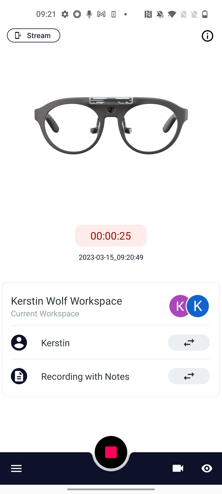
Start the recording in the app and let the shopper go. An import study has no live markers, because iMotions is not running, so the operator supplies spoken markers: a short phrase said aloud at a defined moment, "shelf start" when the shopper arrives at the shelf and "shelf end" when the chosen product is in hand. The glasses guide notes that a recording contains video and sound, so the phrase can be found again in replay and turned into an annotation that marks the shelf interval; whatever the audio setting, also write the elapsed time from the app's counter next to each marker in the log, so that the interval can be set even if the sound is unusable. Walk behind, out of the shopper's line of sight, and watch for the frame sliding; the guide names sliding as the thing to keep an eye on during a recording. After the purchase, stop the recording, remove the glasses, debrief, and give the survey. Then, before the next shopper, review the recording on the phone at increased speed, as the guide recommends, to confirm that the gaze marker sat on the objects the shopper handled; a slipped frame shows as a marker that is consistently beside things rather than on them. Note the result and the battery state in the log.
The scene camera films other shoppers and staff who never consented. Keep the recordings on the lab's encrypted drives, do not show them outside the lab, and blur faces before anything is shown to a client or in class. The iMotions consent FAQ describes the manual route, editing the videos in the study's Capture folder in a video editor, and recommends doing it after all post processing and analysis are complete, because blurring changes the video. iMotions Lab 11.1 adds a built in route: with the study selected, the study view shows a "Video Face Blur" heading with a "Post Process" button next to the Neon Glasses Recording import button, and the same button appears on each respondent's RECORDED DATA tab. The help center article Face Blur Post Processing describes it; what the dialog offers on the lab laptop (which videos, which faces, whether the original is kept) must be verified on the lab machine before the first client study. The face blur step is a privacy obligation, not a courtesy.
Now the files. Each recording lives on the phone until it is exported, and the help center's recommended route is the USB cable. In the Companion app open the Recordings menu (the folder icon at the bottom of the app), open the menu for the recording (the "..." icon to its right), and tap Export; the older article adds a "Yes" confirmation. Connect the phone to the lab laptop with the USB-C cable from the Neon case; the help center warns that other cables may not support the transfer. In Windows File Explorer open the phone, then Internal shared storage > Documents > Neon Export. You should see one folder per exported recording, named by its timestamp. Copy each one into the study's import folder on the laptop and rename it with the shopper's anonymous ID, P01, P02, and so on, because the sub folder name becomes the Respondent Name in iMotions. Keep the original timestamp in the session log next to the ID so that the two can always be matched.
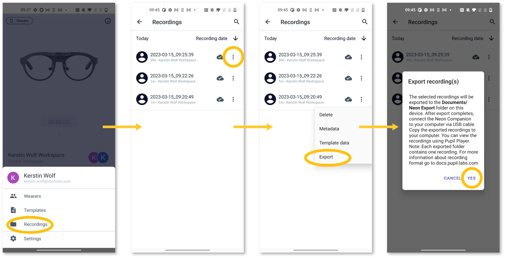
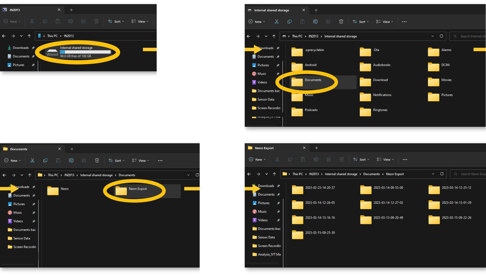
Inside each respondent folder iMotions expects seven files, and the import window lists them: gaze ps1.raw, gaze ps1.time, Neon Scene Camera v1 ps1.time, Neon Scene Camera v1 ps1.mp4, extimu ps1.raw, extimu ps1.time, and info.json. The gaze pair is the eye data and its timestamps; the scene camera pair is the video and its timestamps; extimu is the inertial measurement unit (IMU) record, the head motion sensor's gyroscope and accelerometer readings; info.json describes the recording. The folder above them, the import folder, holds nothing but respondent folders. The help center picture below shows the shape with six respondents, and it is the only shape that imports.
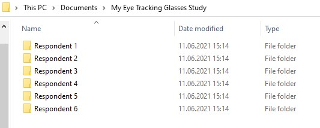
The alternate route is Pupil Cloud, the vendor's web service, which the help center calls entirely optional for the software versions the lab runs. If the laptop is not at hand, enable Cloud upload in the app's Settings (the gear icon), open the Recordings menu, tap the "..." menu for the recording, and tap Upload; a cloud icon appears when the upload is complete, and the help center suggests allowing processing time roughly equal to the recording's length. Then sign in to Pupil Cloud, open the workspace and project, rename the recordings to the anonymous IDs before downloading, select them, right-click, hover Download, and click Native recording data. A zip named after each recording is created; extract each into its own respondent folder in the same import folder shape. Two cautions: uploading a recording that shows bystanders to a vendor's servers is itself a data handling step that the consent form and the IRB protocol must cover, and the vendor's documentation, not this page, is the current word on the app and the cloud (Pupil Labs, n.d.).
Then the import. For an Import glasses data study, the help center's path is the wizard from section 04: Glasses, Import glasses data, Neon Glasses, New study or Merge into existing compatible study, Next, then Browse and select the import folder itself, not a folder inside it, and click Import. iMotions creates one respondent per sub folder. For a Glasses live recording study, select the respondent, open the RECORDED DATA tab, and click the "Import data" button under "Neon Glasses Recording"; on the lab laptop that button sits at the bottom of the tab next to Video Face Blur. The help center dialog below shows what the import window says about the folder structure. You should see, once the import finishes, a recording card on the respondent's RECORDED DATA tab.
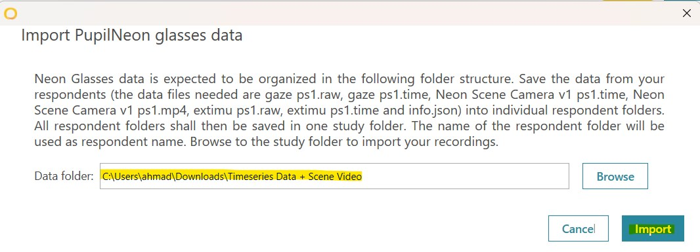
The card is the first quality check. On the lab laptop a respondent's RECORDED DATA tab shows a card labeled "Neon Glasses" with the recording's length (9.4 s on the recording shown below), "200Hz", and "100%", and the same two values are repeated at the bottom of the tab. The first is the sampling rate, the number of gaze samples recorded per second; the Neon's gaze data arrive at 200 Hz, so 200 means the recording achieved its nominal rate. The second is the percentage of expected samples actually obtained; the help center's data quality article defines it as the inverse of the percentage of data missing. The help center's own example card reads 186 Hz, a recording that fell below the nominal rate. The Export button at the top right of the study's RECORDED DATA tab writes the same numbers for every respondent to a text file ending in _DataQuality.txt, the data quality statistics export; section 06 files it with the study, and the methods paragraph in section 09 quotes it. The exclusion rule itself is applied in section 08 to the Valid data column of the AOI metrics export, which carries the same percentage per respondent. Keep the rule you wrote in section 02 and apply it to the number on the card, not to how the replay looks.
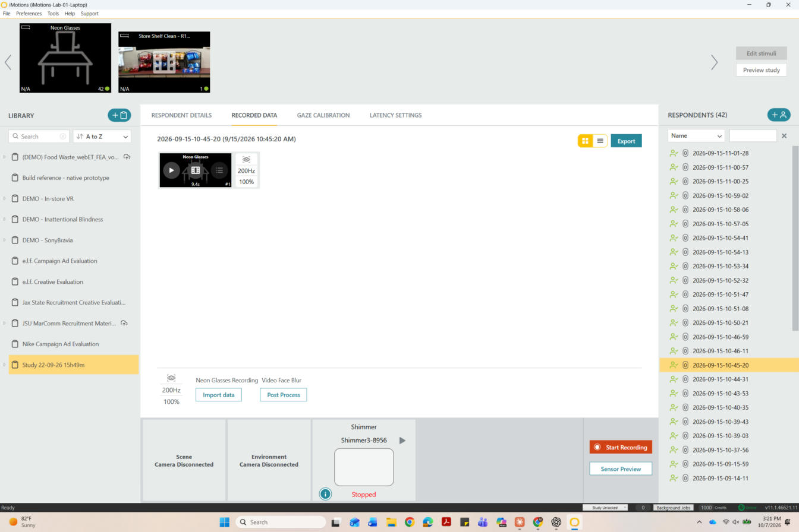
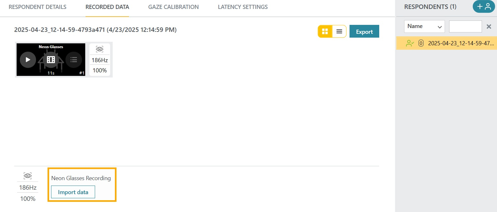
What goes wrong, and how it looks later. A slipped frame looks fine on the day and shows up in replay as a gaze marker that sits consistently to one side of everything the shopper handled; in the simulated set that is P17, whose frame slipped at about 40 seconds, whose valid data fell to 46 percent, and whose row carries the exclusion. A shopper who turns away from the shelf to talk to a companion produces seconds in which there is nothing to map; in gaze mapping those seconds appear as blue rather than green on the timeline, processed but not applied, and they reduce how much of the visit contributes to the metrics. A full phone stops the recording without ceremony; check free space before the day, and after each recording has been copied to the laptop and to a second drive, export and clear it. A dark aisle, or a wing lit differently from the photograph, defeats the contrast that gaze mapping depends on, and the only fix is a new reference photograph taken in the same light. A wearer that was never created, or a recording that was never started, produces no file at all, which is why the log asks for the elapsed time at the shelf start: a blank there is the earliest warning you will get.
Pupil Labs, "Introducing Neon Eye Tracking Glasses" (YouTube)
Pupil Labs, "Pupil Cloud Onboarding" (YouTube)
iMotions, "iMotions Mobile Research with Eye Tracking Glasses & Heart Rate" (YouTube)
Help center: Neon by Pupil Labs: Live Recording and Other Study Types · Help center: Importing Eye Tracking Glasses Files into iMotions · Help center: Face Blur Post Processing · Help center: Export: Data Quality Statistics
Run a field day in order: pilot, consent, fit and three target gaze check, lighting, spoken markers and the session log, debrief and survey, face blur, export over USB or Pupil Cloud into the one folder per respondent shape, import, and read the sampling rate and data percentage on the recording card.What the data are, and how to describe them so a reader can trust the numbers
Every number that leaves this workshop, a time to first fixation of 2.25 seconds or a dwell share of 18 percent, is the last link in a chain of measurements and decisions: eye cameras produce gaze samples, a filter sorts those samples into fixations and saccades, gaze mapping projects them onto a photograph of the shelf, areas of interest cut the photograph into regions, and metrics summarize what landed in each region. A methods section exists so that a reader can follow that chain and judge whether the numbers mean what you say they mean. The reporting standards for quantitative research in psychology ask for exactly this kind of description of apparatus, processing, and exclusion rules (Appelbaum et al., 2018), and the eye tracking handbook that iMotions itself points to supplies the vocabulary (Holmqvist et al., 2011). This section walks the chain from the first link to the last, then shows what a methods paragraph built from it looks like.
What the glasses record
The Neon glasses carry two inward facing eye cameras, a forward facing scene camera, and an IMU, an inertial measurement unit that records head motion (Pupil Labs, n.d.). From the eye cameras the system computes a gaze sample, one estimate of where the wearer is looking, 200 times per second: the iMotions Neon article states that both import routes deliver the scene camera recording with 200 Hz gaze data, and the Recorded Data card on the lab laptop shows the same figure, 200Hz, next to the gaze sample quality percentage. That rate is the sampling rate. The scene camera runs much slower than the gaze stream; the iMotions glasses guide notes that most scene cameras update at about 30 frames per second, so one second of recording holds roughly 200 gaze points drawn over about 30 video frames. Verify the exact scene camera frame rate of the lab's Neon on the lab machine before you quote it. Accuracy and precision figures for the Neon come from the vendor's own accuracy test report (Baumann & Dierkes, 2023); quote them as vendor figures, not as independent findings. A peer reviewed evaluation that included the Neon found that pupil size changes shift apparent gaze in head mounted trackers, with the smallest shift for the Neon (Salari et al., 2026), which is one reason the fit check in section 05 matters.
Fixations and saccades: define them, do not assume them
A fixation is a period during which the gaze rests on one location long enough for the brain to take in detail; a saccade is the fast jump between two fixations, during which little is seen. The figure below shows the idea. The complication is that the research community does not agree on one definition: a survey of 124 eye movement researchers found substantial disagreement about what counts as a fixation (Hessels et al., 2018). The practical answer is an operational definition: in your methods, a fixation is whatever the filter you name, with the parameters you list, classified as a fixation. Algorithms fall into two families, those that threshold velocity and those that threshold dispersion (Salvucci & Goldberg, 2000); iMotions offers both, and the lab study uses the velocity family.
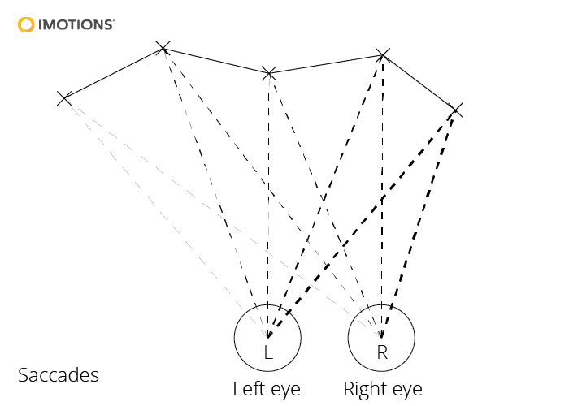
Glasses add a second complication. When a shopper turns to scan the shelf, the eyes and the head move together, and the gaze point in the scene video can stay on a product while the whole picture slides. The iMotions glasses guide calls fixation analysis on glasses data "heavily debated" for this reason, and the Areas of Interest article says that gaze based metrics "can be preferred" for mobile recordings because head movements and reflex eye movements can disturb the classification. Head motion also lets the frame slip on the nose, and slippage measurably degrades data quality in head worn trackers (Niehorster et al., 2020). The lab's rule is to report fixation based metrics, which the sample report and most published shelf studies use, and to check them against the gaze based twins (gaze based dwell time and hit time) before drawing a conclusion.
The I-VT filter and its parameters
The lab's fixation filter is I-VT, velocity threshold identification. It computes how fast the gaze is moving at each sample, in degrees of visual angle per second, and calls the sample part of a saccade when the speed is at or above a threshold and part of a fixation when it is below. The visual angle idea is shown below: the same shift of a few pixels is a small angle for a viewer far from the display and a large angle for a viewer close to it, so velocities are expressed as angles rather than pixels. For screen based trackers the distance comes from the tracker; for glasses, the I-VT article explains, iMotions uses fixed field of view parameters (width, height, and distance) that newer versions fill in automatically from the manufacturer. Verify on the lab machine, under the study's STUDY SETTINGS tab, that those values are populated for the Neon.
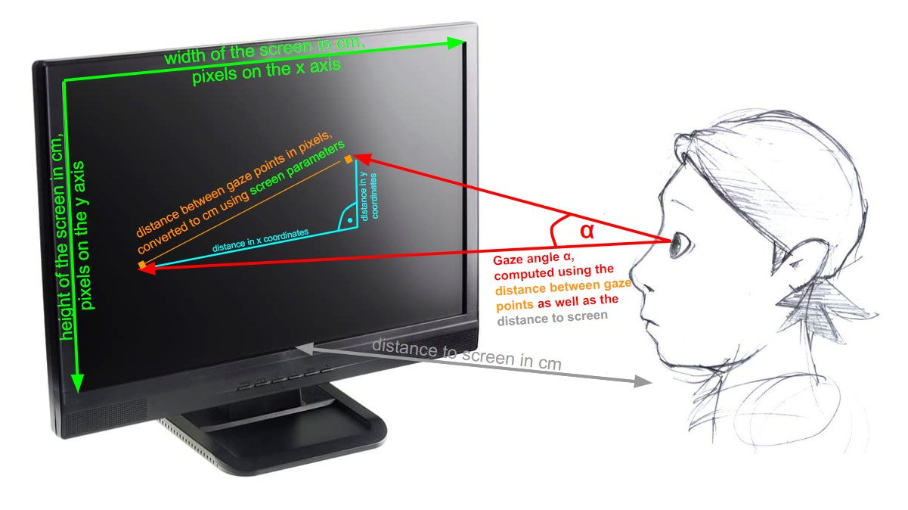
The parameters live on the study's GAZE ANALYSIS tab (Library > click the study > GAZE ANALYSIS). On the lab laptop they read: Fixation Filter I-VT (fixations and saccades); Window Length 20 ms; Velocity Threshold 30 degrees/second; Gap Fill-in (interpolation) checked with Max Gap Length 75 ms; Noise Reduction unchecked; Discard Short Fixations checked with Minimum Fixation Duration 60 ms; Merge Adjacent Fixations checked with Max Time Between Fixations 75 ms and Max Angle Between Fixations 0.5 degrees. The I-VT article explains what each one does. Window Length is the time window around a sample over which velocity is computed; a smaller window reacts faster to changes in velocity. Velocity Threshold is the cutoff between fixation and saccade; raise it and more samples fall below it, so fixations grow and saccades shrink. Gap fill-in interpolates missing data in gaps no longer than the maximum; longer gaps become an unknown eye movement and break fixations. Noise Reduction smooths the coordinates, and on a low sampling tracker it "risks to filter out the signal." Discard Short Fixations reclassifies fixations below the minimum duration as unknown. Merge Adjacent Fixations joins fixations that are close in time or angle into one longer fixation. The article gives no default numbers, so the values above are the lab laptop's current settings, not a vendor recommendation.
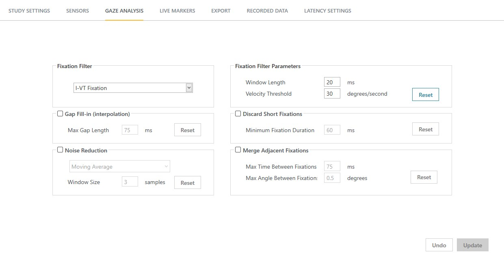
The classifier runs for the whole study, and every fixation based AOI metric depends on it. Never change the filter or a parameter between conditions or between respondents, and record the values in the project log before the first export. If you change a value later, every metric must be recomputed and the methods paragraph rewritten.
Gaze mapping is a measurement, not a picture
Gaze mapping projects gaze from the moving scene video onto one still photograph of the shelf, the reference image. The help center describes the standard "full-image" algorithm as an object recognition routine that searches for the visual features of the reference image in each video frame and, when it finds them, moves the gaze point to the matching place on the photograph. Because every shopper's gaze ends up on the same image, heat maps, scan paths, and static areas of interest become possible; without mapping, each recording is a separate video with no shared coordinates. The result is only as good as its coverage: the mapping timeline turns green where the algorithm processed and applied the mapping, blue where it processed the frames but could not apply a mapping, and gray where nothing has run yet. Blue is not automatically a failure; the article notes that it may simply mean the respondent looked outside the frame of the reference image. The algorithm does fail when the image is absent from the video, when the gaze falls outside it, when the photograph is not similar enough to the scene, or when frames are blurred by fast movement. The glasses guide adds that mapping "relies exclusively on contrast," so a shelf lit differently on the field day than in the photograph maps poorly, and that mapped points "may look spatially closer than they were" because the scene camera sees more than the two dimensional image. Only the mapped portion of a recording contributes to AOI metrics, which is why the share of the shelf interval that mapped belongs in the methods.
AOIs are measurement decisions
An area of interest (AOI) is a region drawn on the reference image, such as the Sensodyne products, the POSM wing, each competitor block, and the price tags. Drawing it is a decision, and the decision should be made before data collection, on the AOI master list from section 02, so that the boundaries cannot drift toward the result you hope for (Simmons et al., 2011). Because no tracker is perfect, the boundary trades two errors against each other: draw it too small and real looks at the product fall outside (misses); draw it too large and looks at the neighbor fall inside (false alarms). Treating the AOI as a signal detection problem makes that trade explicit (Orquin et al., 2016), and noisy data need larger regions than clean data (Hessels et al., 2016). The iMotions AOI article passes on the handbook rule of about 1 to 1.5 degrees of visual angle of padding around an object, recommends simple shapes over tight polygons, and notes two mechanics that matter for small shelf elements: a fixation counts as inside an AOI if at least one of its samples is inside, so a fixation on the edge of two neighbors can count for both, and a dwell begins or ends only after the gaze has been inside or outside the region for the dwell classification threshold, 100 ms by default.
The metrics, as iMotions defines them
The sample report speaks the client's language: looking time, time to notice, percent to notice. The export speaks the software's language, and the methods must use the software's names so a reader can match them. The definitions below are from the iMotions AOI Metrics article; "parent" means the stimulus, scene, or gaze map that holds the AOI, so for the shelf study the clock starts when the shelf interval starts.
| Export column | Definition (AOI Metrics article, fixation based unless noted) | Report name |
|---|---|---|
| TTFF parent (ms) | Time from the start of the AOI's parent until the first fixation on the AOI | Time to notice |
| TTFF max. (ms) | As TTFF parent, but a respondent who never fixated the AOI is assigned the parent's full duration as the maximally possible time | Time to notice, counting non lookers |
| Dwell time (ms) | Total time the respondent fixated on the AOI | Looking time |
| Dwell time (%) | Dwell time relative to the time the AOI was active | Share of looking time |
| Fixation count | Number of fixations detected inside the AOI | (not reported) |
| Revisit count | How often the respondent looked back and fixated on the AOI after the first dwell | (not reported) |
| Respondent ratio (%) | Percentage of respondents who fixated on the AOI | Percent to notice |
| Gaze Hit time parent (ms) | Gaze based: time from the parent's start until the gaze first entered the AOI, no fixation required | (check against TTFF) |
Two details decide how you analyze these columns. First, iMotions writes NA when a metric cannot be calculated, for example when an AOI received no fixation; an NA in TTFF means "not observed," not zero, while the same respondent's dwell time on that AOI is a genuine zero. Second, TTFF max. exists for the question "how long until the brand was noticed, counting the shoppers who never noticed it as the full exposure." It keeps every respondent in the comparison at the cost of treating "never" as "at the end," so report it beside TTFF parent and say which question each answers.
Data quality
The export's Information block includes Valid data, defined as the average percentage of collected and interpolated samples, where values below 100 indicate missing data. The Recorded Data card shows a related figure per recording (200Hz and a percentage on the lab laptop), and the data quality statistics export writes the effective sampling rate and the percentage of data obtained for each device to a text file. None of these tells you where the missing data fall, so pair them with a visual check of the mapped replay. An exclusion rule written before collection turns these numbers into a decision instead of a judgment call; the simulated study used "exclude a respondent whose Valid data is below 70 percent," and applied it once.
Writing the methods paragraph
A methods paragraph for the analysis names the apparatus with version and maker, the processing steps in order, every parameter a reader would need to repeat the processing, the exclusion rules and when they were set, and the statistical tests. Cite the software as iMotions Lab (Version 11.1; iMotions A/S, Copenhagen, Denmark, 2026) and the glasses as Pupil Labs Neon with the vendor documentation (Pupil Labs, n.d.). The model below is adapted from the workshop's results_text.md and describes the simulated study; the validity checklist of stimulus, task, participant, and apparatus threats (Orquin & Holmqvist, 2018) is a good test of whether anything is missing, and the JARS standards list what a journal will ask for (Appelbaum et al., 2018).
Eye movements were recorded with Pupil Labs Neon eye tracking glasses (200 Hz gaze data, scene video) and processed in iMotions Lab (Version 11.1; iMotions A/S, Copenhagen, Denmark, 2026). Fixations were classified with the I-VT filter (window length 20 ms, velocity threshold 30 degrees per second, gap fill-in up to 75 ms, minimum fixation duration 60 ms, adjacent fixations merged within 75 ms and 0.5 degrees). Gaze from each recording was mapped onto a reference photograph of the shelf with the full-image algorithm, and six areas of interest were drawn on that image: Sensodyne_Products, Sensodyne_POSM_Wing (POSM shelf only), Competitor_A, Competitor_B, Price_Tags, and Shelf_Other. Fixation based AOI metrics were exported per respondent (Individual AOI metrics export; dwell classification threshold 100 ms; no first fixations excluded). The primary dependent variable was time to first fixation on Sensodyne_Products (TTFF parent, from the start of the shelf interval); the secondary dependent variable was Dwell time (%) on that AOI. Before inspecting the data we fixed two rules: respondents with Valid data below 70 percent were excluded, and an AOI a respondent never fixated was treated as TTFF not observed and dwell time zero. One respondent (P17, POSM) was excluded under the first rule (Valid data 46 percent, glasses slipped), leaving 14 respondents on the POSM shelf and 15 on the NoPOSM shelf. All numbers are simulated for teaching.
Writing "fixations were detected automatically" and stopping there. A reader cannot repeat that. Name the filter, list the parameters, and state that the same settings applied to every respondent.
Help center articles for this section: Fixation and saccade classification with the I-VT filter, Gaze Mapping, Areas of Interest (AOIs), AOI Metrics, and Export: Data Quality Statistics (sign in through my.imotions.com).
From recordings to numbers: the iMotions analysis chain, step by step
Section 06 described the chain; this section runs it on the lab laptop. iMotions turns a folder of glasses recordings into an AOI metrics table in a fixed order: create an analysis, replay and inspect each recording, gaze map it onto the shelf photograph, draw AOIs on the gaze map, generate heat maps and scan paths for the pictures, export the metrics, and export the data quality statistics. Each step below says why it exists, gives the exact path as the lab laptop shows it (the help center wording is noted where it differs), states what you should see, and names the common mistake. Everything was checked on the lab's own Neon study, "Study 22-09-26 15h49m", whose analysis "Store Customers - 26 Usable Clips" is the in-class demonstration.
7.1 Create the analysis
Why. In iMotions an analysis is a named subset of a study: the respondents and stimuli you want to work on, plus the markers, gaze maps, AOIs, and exports that belong to them. The raw study stays untouched. How. In the Library, hover over the study name and click the Add Analysis button that appears (the help center calls it "Click to Create Analysis"; on the lab laptop, verify which icon appears on hover, since the large plus next to LIBRARY creates a new study). Enter a Name and Comments, click Next; define Segmentation Criteria, either by checking respondents manually or automatically by Gender, Age, Flow, and Group, click Next; set up Signal Processing if needed, click Next; select the stimuli; click Add. You should see the new analysis as a child node under the study in the Library tree, and the analysis buttons (Replay, Aggregate, AOIs, Gaze Map, Heatmap, Survey, Signal Processing, Reports, Dashboard, Export) along the bottom when you click it. In the lab study the existing analysis holds 26 of the 42 recordings. Common mistake. Deciding which respondents to leave out after looking at results. The exclusion rule is written before collection; segmentation only applies it.
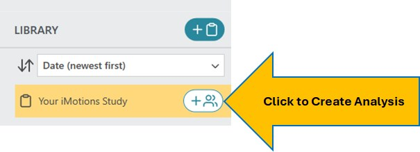
7.2 Replay and inspect
Why. No metric should be computed from a recording nobody has watched. The replay shows whether the gaze stayed on the shelf, whether the frame slipped, and where the shelf interval begins and ends. How. Library > expand arrow on the study > click the analysis name > Open analysis. The analysis window opens on the REPLAY tab (the other tabs are AGGREGATE and AOI) with the scene video, a SIGNALS panel, MARKERS and ANNOTATIONS panels, and playback controls with a 50 ms step and 1x speed. Press Play, then Pause. You should see an orange gaze circle and gaze path drawn on the scene video, and the time counter advancing. While you are here, mark the start and end of the shelf interval as an annotation: the Gaze Mapping article notes that annotations made in the Replay editor can be copied to a gaze map interval later. Common mistake. Judging a recording from its first ten seconds. The lab's recordings include walking through a door before the shelf comes into view, so scrub to the shelf.
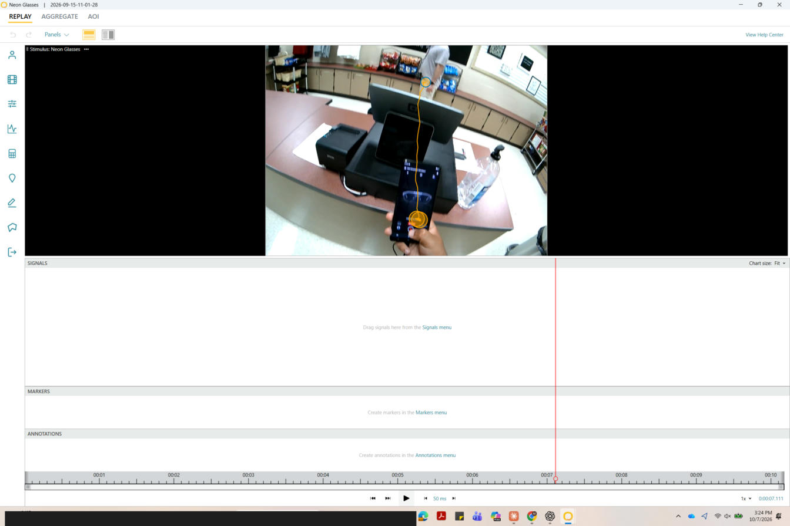
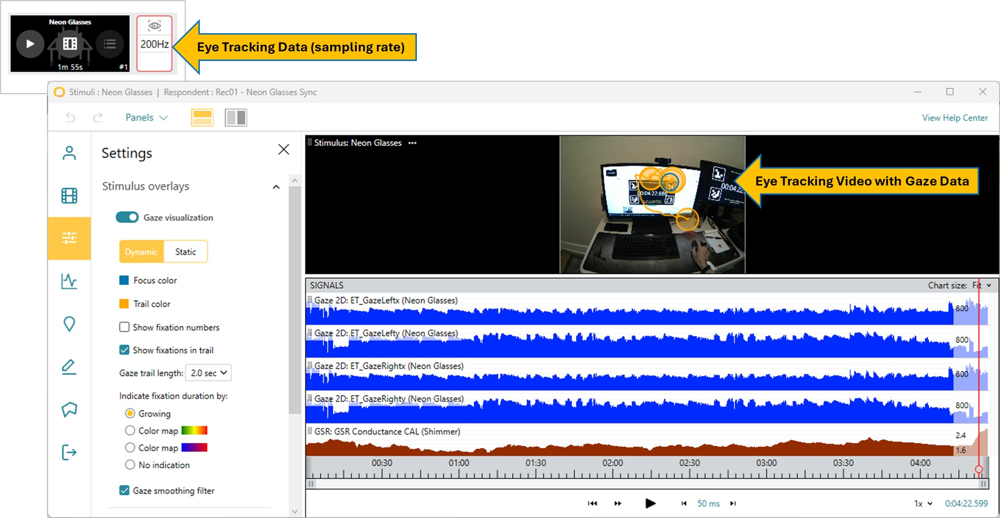
7.3 Gaze mapping, one respondent and then all of them
Why. Until the gaze is on the photograph, there is nothing to aggregate. How. With the analysis open in the main window, select the Neon Glasses stimulus and click Gaze Map. The Gaze Mapping Editor shows the Reference Image Panel, the Stimulus Recording, the Replay Navigator and Timeline, and the Reference Image menu button at the bottom right.
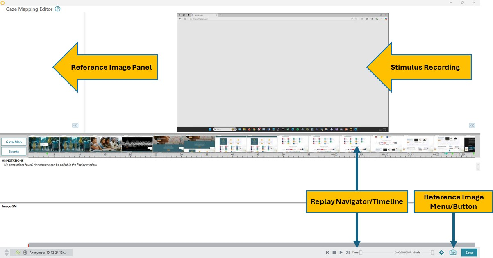
- Place the cursor at the start of the shelf interval. Click the Reference Image menu and, for the first respondent, choose From Image and browse to the shelf photograph taken on the field day (From Current Frame uses the video frame instead). Name it and click Save. You should see the image added to the timeline from the cursor to the end.
- Move the cursor to the end of the shelf interval, right-click in the image's track on the Image GM timeline, and click Start/end interval at timeline position (the Setting Up Gaze Mapping article also lists Control+I, dragging the interval borders, and copying an annotation interval). You should see the interval shortened to the shelf period only.
- Right-click the track again, click Queue gaze mapping processing, then Use full-image algorithm for gaze mapping. Watch the Background Jobs button at the bottom of the main window; do not close iMotions while a job runs. You should see the interval turn green where mapping was applied and blue where it was processed but not applied.
- Inspect. Replay and compare the gaze points in the recording (right) with the mapped points on the photograph (left), stepping with Ctrl + left and right arrow keys so that no sample is skipped.
- Correct if needed. Delete a wrongly mapped range (click its start, hold Shift, click its end, right-click, Delete gaze mapping range; it turns blue). Add key frames: right-click > Add gaze mapping keyframe on a sharp frame, then right-click > Open key frame manager, Ctrl-click a corner in the reference image and click the matching point in the frame, at least four points per key frame, Ctrl+S to save, then Exit and Process. Key frames only fill gaps; they cannot change an existing mapping. As a last resort, step gaze by gaze and click the correct location on the photograph; corrected points show green beside the algorithm's yellow.
- For every other respondent choose From Existing and the same image, so that all respondents aggregate on one photograph. To run them together, exit the editor, right-click the study in the Library, choose Post-processing > Gaze mapping, select the unprocessed mappings, and click Schedule.
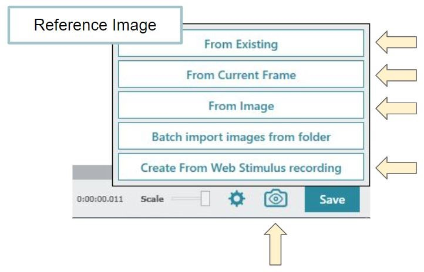
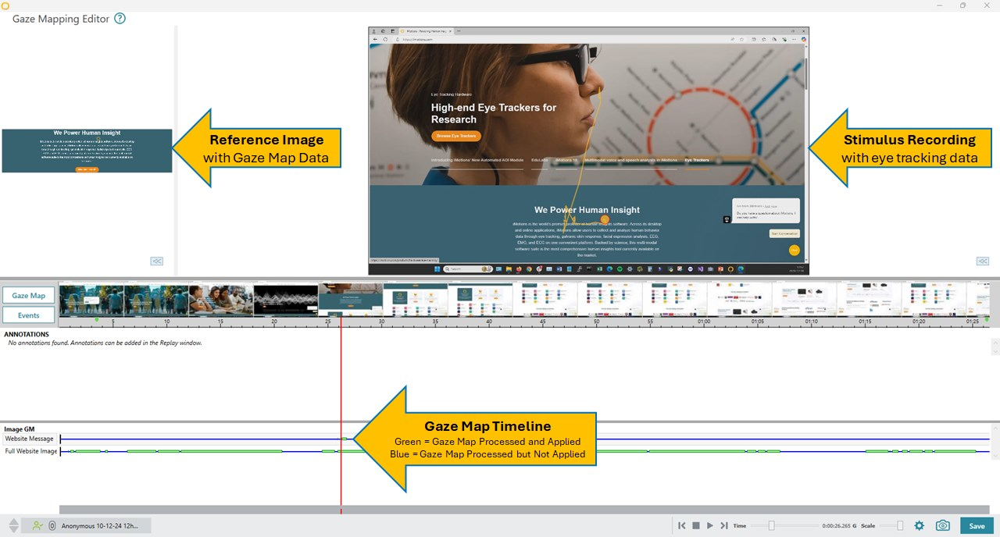
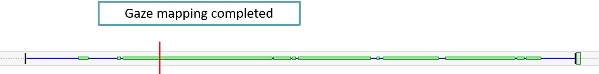
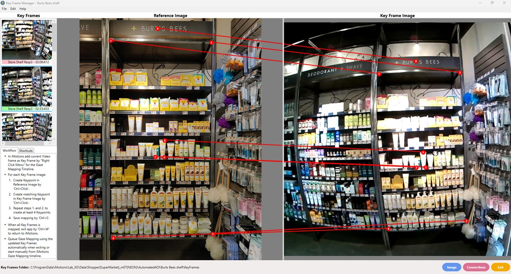
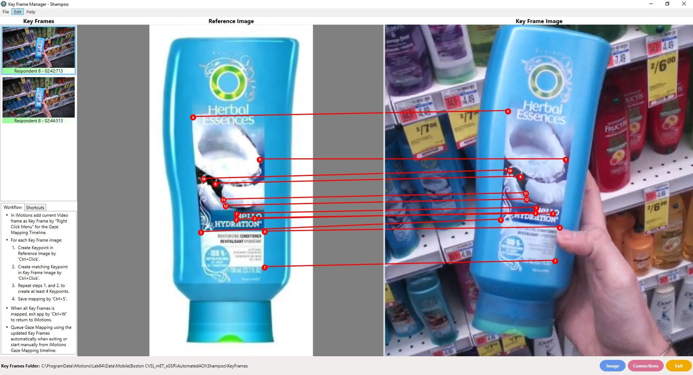
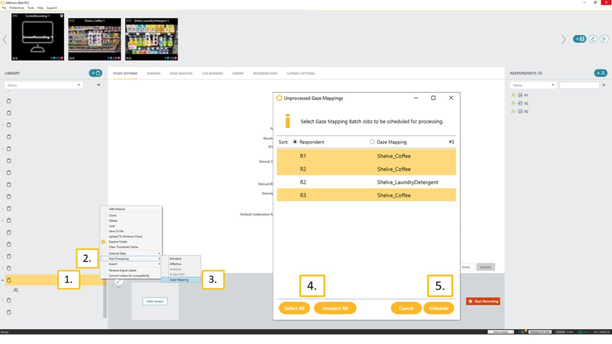
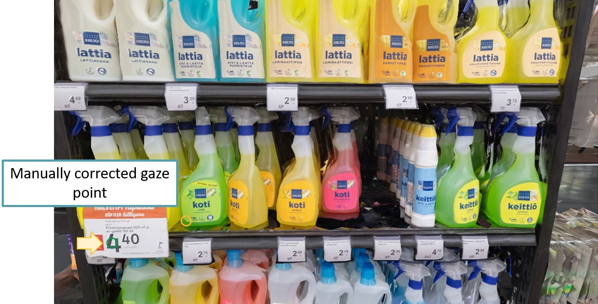
Common mistake. Choosing From Image again for the second respondent. That creates a second reference image, and the two sets of data never combine. Cloud alternative. Pupil Cloud offers a Reference Image Mapper enrichment that does a similar projection before import; the video below shows it. The lab's standard route is gaze mapping in iMotions, where the result can be inspected and corrected frame by frame.
Pupil Labs, "Pupil Cloud: Reference Image Mapper Enrichment" (YouTube)
7.4 AOIs on the gaze map
Why. The gaze map is a static stimulus, so one set of AOIs drawn on it applies to every respondent. On the raw Neon Glasses recording, by contrast, an AOI would have to be drawn per respondent and moved with key frames as the shelf moves in the video: that is a dynamic AOI, and the How to Create AOIs article says it must be defined individually for every recording from mobile glasses. A static AOI on the gaze map is the whole reason for mapping. How. In the main window select the gaze map stimulus, click AOIs, then Open analysis; the analysis window opens on the AOI tab, which on the lab laptop shows Draw AOI, Automate AOI, a selection tool, the message "Select an AOI to edit", an AOI TIMELINE panel reading "No AOIs yet", and a MARKERS panel. Click Draw AOI, name the AOI from the master list, choose a tool (Rectangular, Circular, Polygonal, or Grid), choose a color, and draw. Repeat for each AOI. Then open the AOI metrics menu (the fifth menu icon) and click Calculate. You should see the AOIs listed on the AOI timeline and, after Calculate, the AOI metrics panel at the top right with Information, Gaze based, Fixation based, and Saccade based blocks; click the icon beside a metric in the menu to show or hide it, and use the "..." icon for Copy table as CSV. Common mistake. Drawing on the Neon Glasses recording instead of the gaze map, or drawing tight polygons with no padding.
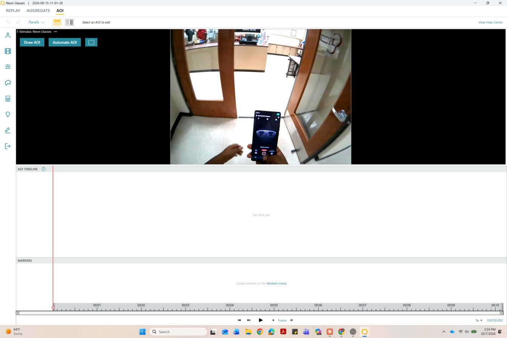
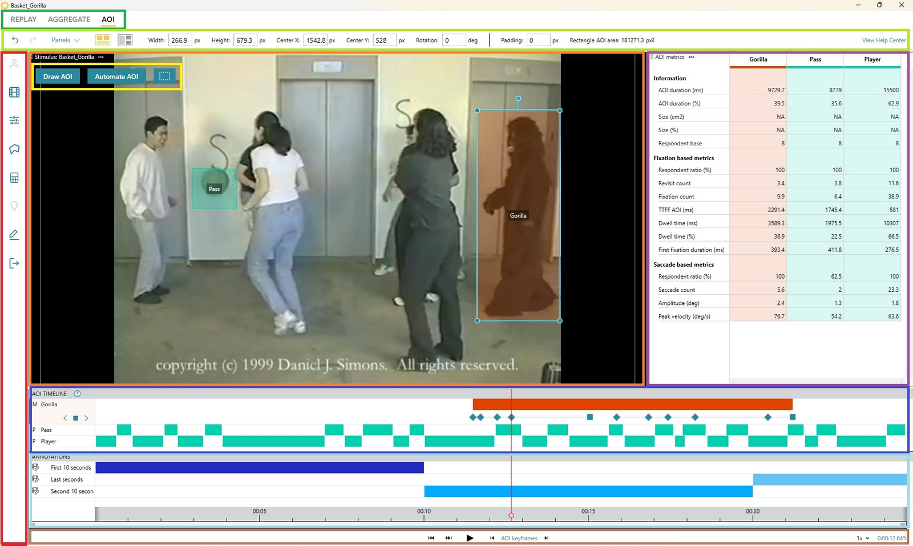
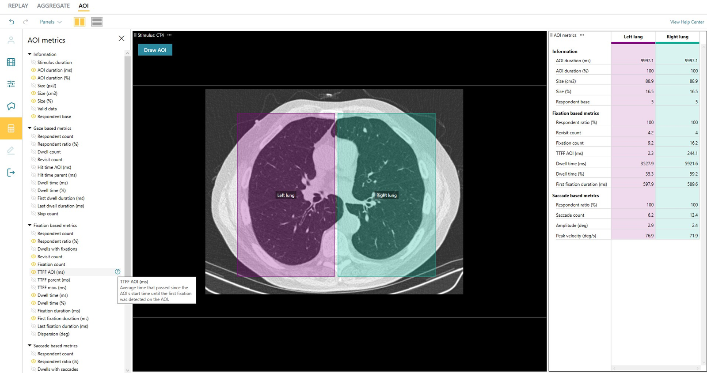
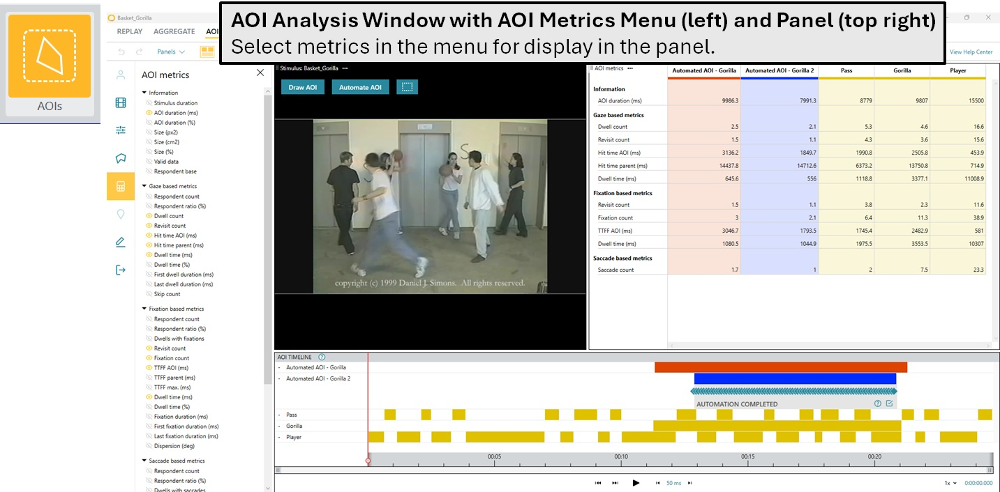
iMotions, "AOI editor feature video" (YouTube)
7.5 Heat maps and scan paths
Why. A heat map shows where the group looked; a scan path shows the order in which one person looked. Both are pictures for the reader, not evidence for the test; the Heatmaps article describes them as qualitative assessments, and the numbers come from AOIs. How, heat map. In the main window select the gaze map stimulus and click Heatmap. A static heat map exists only for static stimuli, which is why on the lab study, with no gaze map yet, Heatmap and Aggregate are gray. For settings, click Aggregate and Open analysis: on the AGGREGATE tab the Settings panel offers Gaze visualization, Heatmap (Dynamic, Static, Off), Heatmap style (Heatmap or Spotlight), Beeswarm (Dynamic, Static, Off), and AOI visualization; the Export panel offers Video, Image, or Heatmap with Heatmap background set to Stimulus. You should see red where the group looked most, yellow and green for less, and transparency where nobody looked. A static heat map combines how many respondents looked and how long; a dynamic heat map shows at each moment only how many looked there. How, scan path. In the Replay window the Settings panel switches between a Static scan path (the whole recording) and a Dynamic one (a trailing window set by Gaze trail length, 0 to 10 seconds), with trail color, fixation numbers, and fixation duration shown by circle size or color; the gaze smoothing filter changes the picture only, never the data. Export with Export > Image. Common mistake. Presenting a heat map of all respondents and all time as if it tested the hypothesis.
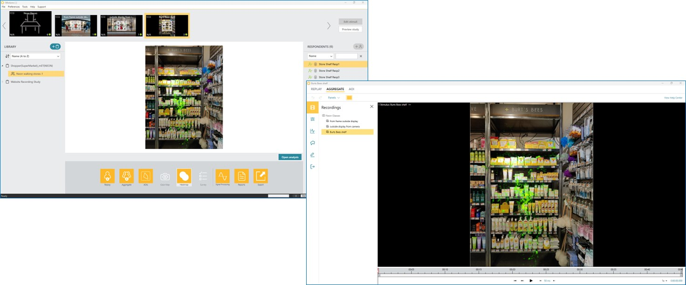
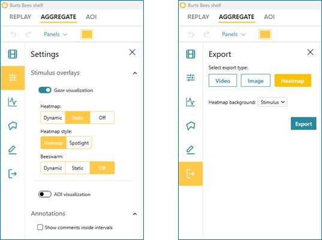
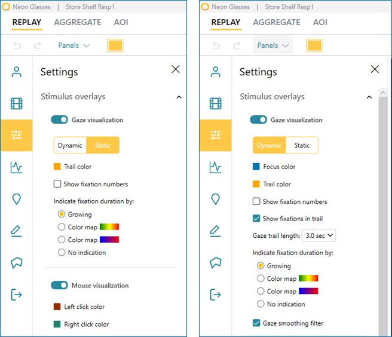
7.6 Export the AOI metrics
Why. The metrics panel averages across respondents; statistics need each respondent's own values. The Areas of Interest article recommends the Individual AOI metrics export for statistical comparison. How. With the analysis selected, click Export, open the R PROCESSING tab, choose Individual metrics exports, and switch on AOI Metrics Export. Tick Individual AOI metrics (and Aggregated AOI metrics if you want the panel's summary as a file). Leave Threshold for dwell classification [ms] at 100 and Amount of first fixations to exclude at 0 unless your analysis plan says otherwise, and leave "Exclude fixations starting before AOI onset or ending after AOI offset" unticked. Click Export individual files. You should see CSV files written to the export folder; verify on the lab machine where that folder is and what the files are named. Common mistake. Exporting only the aggregated metrics, which give one row per AOI and cannot be tested.
7.7 Export the data quality statistics
Why. The methods paragraph needs the effective sampling rate and the percentage of data obtained per recording. How. Click the study name in the Library, open the RECORDED DATA tab, and click the Export button at the top right of the tab, next to the grid and list view buttons; save the text file. You should see a file ending in _DataQuality.txt. (The position of the Export button was confirmed on the lab laptop on October 7, 2026.) Common mistake. Quoting the panel's percentage from memory instead of filing the export with the study.
Help center articles for this section: Analysis Overview, Gaze Mapping, Setting Up Gaze Mapping (Gaze Mapping section), How to Create AOIs, AOI Metrics, Heatmaps, Scan Paths and Individual Heatmaps, Export: Data Quality Statistics. For a longer treatment, the iMotions webinar Master Advanced Eye Tracking Data Analysis.
From the export to a test: cleaning, describing, testing, and sizing the effect
The export is not the result. It is a table of 165 rows that still has to be cleaned, summarized, tested, and turned into an effect size with an honest interval. This section does that on the SIMULATED dataset from section 03, first in R with the script analysis.R, then in Excel. Every statistic here is simulated for teaching; the numbers match analysis_output.txt exactly and must never be quoted as findings about real shoppers.
Open the export without breaking it
iMotions exports are comma separated with a dot as the decimal mark. The help center warns that double clicking a CSV applies Windows regional defaults and can put every value in one column, so use the import route: in Excel, Data > From Text/CSV, select the file, set Delimiter to Comma and File Origin to 65001 Unicode (UTF-8), and load; or File > Open with the Text Import Wizard, Delimited, Comma, and a dot decimal under Advanced. In R, read_csv handles it directly. Save your working copy as .xlsx and keep the original CSV read only.
Tidy data and the unit of analysis
The Individual AOI metrics export is tidy: one row per respondent by AOI, with the identifiers (Respondent Name, Group, AOI Name) in their own columns and one column per metric. The simulated file has 165 rows because 15 POSM shoppers see six AOIs and 15 NoPOSM shoppers see five. The row is not the unit of analysis; the shopper is. Each hypothesis about one AOI uses one row per shopper, and a question about all AOIs at once needs a model that knows which rows share a shopper (below).
Exclusions and missing AOIs
Two rules were fixed before anyone looked at the data. First, exclude a respondent whose Valid data is below 70 percent. In the simulated file that is P17 (POSM, Valid data 46 percent); the session log records that the glasses slipped at about 40 seconds and the gaze offset is visible in the replay. P09 needed a second gaze check, passed it, and stays in; a repeated check is not a reason to exclude. The kept sample is 14 POSM and 15 NoPOSM. Second, an AOI the respondent never fixated has an NA in every TTFF column. That NA means "not observed," and it must not become zero: a zero TTFF would say the shopper fixated the product at the first instant. The same respondent's dwell time, fixation count, and revisit count on that AOI are genuine zeros. In the simulated data 9 of the 159 kept rows have no fixation. Reporting the exclusion rule, the number excluded, and the reason is part of the results, not an embarrassment to hide (Simmons et al., 2011).
The descriptive table
Descriptive statistics come before any test: for each AOI and condition, how many respondents, what share of them fixated the AOI (the respondent ratio), the mean and standard deviation of TTFF among those who did, and the mean and SD of dwell share among everyone. The rows for the two hypotheses, from the simulated output, are below. TTFF to Sensodyne_Products: POSM M = 2.25 s, SD = 0.86, n = 14; NoPOSM M = 3.59 s, SD = 0.98, n = 15, with a respondent ratio of 100 percent in both groups. Dwell time (%) on Sensodyne_Products: POSM 18.43 (SD 5.98), NoPOSM 10.76 (SD 4.42). Time on the two competitor AOIs combined: POSM 36.0 s (SD 14.6), NoPOSM 49.3 s (SD 16.4). Fixation counts on Sensodyne_Products were 88.43 (POSM) and 57.13 (NoPOSM).
| AOI (simulated) | Condition | n | Resp. ratio % | TTFF M (SD) s | Dwell % M (SD) | Fixations M (SD) |
|---|---|---|---|---|---|---|
| Sensodyne_Products | NoPOSM | 15 | 100.0 | 3.59 (0.98) | 10.76 (4.42) | 57.13 (21.04) |
| Sensodyne_Products | POSM | 14 | 100.0 | 2.25 (0.86) | 18.43 (5.98) | 88.43 (29.00) |
| Sensodyne_POSM_Wing | POSM | 14 | 100.0 | 1.92 (0.70) | 6.26 (3.01) | 31.50 (18.65) |
| Competitor_A | NoPOSM | 15 | 100.0 | 1.97 (0.52) | 17.38 (5.74) | 91.53 (37.45) |
| Competitor_A | POSM | 14 | 100.0 | 2.86 (0.80) | 14.81 (3.76) | 75.86 (24.35) |
| Competitor_B | NoPOSM | 15 | 93.3 | 3.94 (1.43) | 15.88 (8.37) | 83.40 (53.81) |
| Competitor_B | POSM | 14 | 92.9 | 5.24 (1.21) | 10.57 (4.20) | 55.64 (30.54) |
| Price_Tags | NoPOSM | 15 | 66.7 | 8.76 (3.18) | 5.21 (4.24) | 30.20 (24.88) |
| Price_Tags | POSM | 14 | 100.0 | 8.82 (2.51) | 8.37 (3.17) | 41.50 (18.88) |
| Shelf_Other | NoPOSM | 15 | 93.3 | 1.32 (0.66) | 13.16 (7.48) | 73.20 (36.17) |
| Shelf_Other | POSM | 14 | 92.9 | 1.32 (0.49) | 15.25 (7.42) | 89.00 (60.85) |
Note: SIMULATED teaching data from analysis_output.txt. TTFF is averaged over respondents who fixated the AOI; dwell share and fixation count include every kept respondent, with never fixated AOIs as zero.
The primary test: Welch's t test on TTFF
Two groups of shoppers saw two different shelves. Their average times to first fixation differ by 1.34 seconds. Could a difference that large arise by chance if POSM had no effect, just from which shoppers happened to be in which group? The t test answers by comparing the difference between the means with the spread inside the groups. Welch's version does not assume the two groups have the same spread, which is why it is the default here, and the p value is the probability of a difference at least this large if there were no effect.
Simulated result: MPOSM = 2.25 s (SD 0.86, n = 14), MNoPOSM = 3.59 s (SD 0.98, n = 15); difference 1.34 s, 95% CI [0.64, 2.04]; Welch t(26.89) = 3.91, p < .001 (the console prints p = 0.0006). R prints the statistic as negative because it subtracts NoPOSM from POSM; report the magnitude and state the direction in words. The degrees of freedom are fractional because Welch's formula adjusts them for unequal variances.
Effect size: Cohen's d with a confidence interval
A p value says whether a difference is surprising; it does not say how large it is. Cohen's d expresses the difference between the means in units of the pooled standard deviation, so a reader can compare it across studies and plan a replication (Lakens, 2013). For TTFF the pooled SD is about 0.92 s and d = 1.45 with a 95 percent confidence interval of [0.61, 2.26] from the noncentral t distribution. By the usual labels, 0.2 small, 0.5 medium, 0.8 large (Cohen, 1992), that is a large effect, but the interval is wide: with 14 and 15 shoppers the data are consistent with anything from a moderate effect to an enormous one. The simulated data were built to show a large effect so that it is visible with this sample; real shelf effects are usually smaller, and the width of the interval is the honest part of the report.
A nonparametric check
TTFF is bounded at zero and skewed to the right, and the groups are small, so the t test is repeated as a Wilcoxon rank sum test, which replaces the values with ranks and asks whether one group's ranks sit higher. If it agrees, the conclusion does not depend on normality. In the simulated data it does: W = 184, p < .001 for TTFF and W = 27, p < .001 for dwell share. The assumption checks also behaved: the variance ratio for TTFF was 1.31 and the Shapiro Wilk p values were .165 (NoPOSM) and .482 (POSM), neither flagging strong skew, although small samples give that test little power.
The secondary tests
Dwell share on Sensodyne_Products uses every kept respondent (never fixated AOIs count as zero): POSM M = 18.43 percent (SD 5.98) versus NoPOSM M = 10.76 percent (SD 4.42), a difference of 7.68 percentage points, 95% CI [3.62, 11.73], Welch t(23.87) = 3.91, p < .001 (console p = 0.0007), d = 1.47, 95% CI [0.63, 2.28]. Time on the two competitor AOIs combined, the comparison the 2020 report headlined, was lower with POSM: 36.0 s (SD 14.6) versus 49.3 s (SD 16.4), t(26.95) = 2.32, p = .028, d = 0.86, 95% CI [0.09, 1.62]. Because every kept respondent fixated Sensodyne_Products, TTFF max. equaled TTFF parent and gave the same test; with real data the two usually differ, and both are reported.
Why rows from one shopper are not independent, and the mixed model
The t test on one AOI uses one row per shopper and is fine. Pooling all 145 rows of the five shared AOIs into one test would treat each shopper as five independent people, which violates the independence assumption that every classical test makes: a shopper who looks longer at everything raises all five of her rows together. A linear mixed effects model handles this by giving each respondent a random intercept, a personal baseline that absorbs the shopper level tendency, while AOI, condition, and their interaction are the fixed effects of interest (Bates et al., 2015). The same logic argues for treating products as a random factor when a study samples many of them (Judd et al., 2012), and a tutorial on power for such models sets realistic expectations for a class sized sample (Brysbaert & Stevens, 2018). In the simulated data the model is dwell_pct ~ aoi * condition + (1 | respondent), fit with lme4 and lmerTest. The interaction answers "does the POSM effect differ by AOI?", and it does: F(4, 108) = 8.14, p < .001, with the model based means showing Sensodyne_Products rising from 10.8 to 18.4 percent and Competitor_B falling from 15.9 to 10.6. The random intercept SD was 3.20 percentage points against a residual SD of 4.79, so about 31 percent of the variance in dwell share lay between shoppers. The main effect of condition alone was not significant, F(1, 27) = 0.50, p = .487, which makes sense: POSM moved attention around the shelf rather than raising it everywhere.
The survey
Purchase intent for Sensodyne (1 to 7) was higher after the POSM shelf, M = 4.86 (SD 1.03), than after the NoPOSM shelf, M = 4.13 (SD 1.36), but the difference of 0.72 points had a 95% CI of [-0.19, 1.64], Welch t(25.95) = 1.63, p = .116, d = 0.60, 95% CI [-0.15, 1.34]. Brand recall (12 of 14 versus 8 of 15) and choosing a Sensodyne product (7 of 14 versus 3 of 15) ran in the same direction, with Fisher's exact test p = .109 and p = .120; Fisher's test is used instead of chi square because the counts are small. Across conditions, dwell share on Sensodyne_Products correlated with purchase intent, r = .49, 95% CI [.15, .73], p = .007. Attention and stated intent move together, but the survey effects are smaller and less certain, which is a recurring finding when biometrics and self report are collected side by side (Venkatraman et al., 2015).
The three figures
The script, line by line
The cards below walk through analysis.R in the order it runs. Each card shows the code, what it does, why it is there, what to look at, and the console output it produced on October 7, 2026 (R 4.3.3, lme4 1.1-35.1, lmerTest and effectsize installed). Open the script beside them.
The Excel route
Students who do not use R can reproduce every two group result in Excel; the finished workbook SIMULATED_shelf_study_analysis.xlsx and the walkthrough analysis_excel_walkthrough.md are in the data folder. The route is: import the CSV with Data > From Text/CSV; add four helper columns to the Data sheet (Keep, TTFF_s, Dwell_pct_clean, Fixated) and fill them down to row 166; build the descriptive table with a PivotTable (Insert > PivotTable, Keep in Filters set to Yes, AOI Name in Rows, Group in Columns, TTFF_s as Average, StdDev, and Count) or with COUNTIFS and AVERAGEIFS; filter the Data sheet to Sensodyne_Products and Keep = Yes (29 rows), copy them to a Sensodyne sheet sorted by Group so the POSM rows sit in E5:E18 and the NoPOSM rows in E19:E33; and run the formulas below. T.TEST gives only the p value, so t, df, and d are computed by hand. ISNUMBER is the key to the helper columns: it is true for a number and false for the text NA or a blank, so never fixated AOIs are handled without replacing NA by zero.
| Quantity | Formula (Sensodyne sheet; K6 = POSM mean, K7 = POSM SD, K8 = POSM n, K9 = NoPOSM mean, K10 = NoPOSM SD, K11 = NoPOSM n) | Simulated result |
|---|---|---|
| Keep (Data sheet, Z2) | =IF(L2>=70,"Yes","No") | P17 = No |
| TTFF_s (Data sheet, AA2) | =IF(ISNUMBER(T2),T2/1000,"") | blank when not observed |
| Dwell_pct_clean (AB2) | =IF(ISNUMBER(W2),W2,0) | 0 when never fixated |
| p, two tailed Welch | =T.TEST(E5:E18,E19:E33,2,3) | 0.0006 |
| t | =(K6-K9)/SQRT(K7^2/K8+K10^2/K11) | -3.91 |
| df (Welch Satterthwaite) | =(K7^2/K8+K10^2/K11)^2/((K7^2/K8)^2/(K8-1)+(K10^2/K11)^2/(K11-1)) | 26.89 |
| Pooled SD | =SQRT(((K8-1)*K7^2+(K11-1)*K10^2)/(K8+K11-2)) | 0.92 |
| Cohen's d | =(K6-K9)/K17 | -1.45 |
| SE of d, 95% CI | =SQRT((K8+K11)/(K8*K11)+K18^2/(2*(K8+K11))), then d ± 1.96 × SE | 0.42; [-2.26, -0.63] |
| CI half width for the chart | =CONFIDENCE.T(0.05, SD cell, n cell) | about 0.54 (NoPOSM), 0.49 (POSM) |
In T.TEST the third argument 2 means two tailed and the fourth argument 3 means unequal variances, which is Welch's test; 1 would be paired and 2 would assume equal variances. The Excel interval for d uses the large sample approximation, so its limits differ slightly from R's noncentral t interval ([-2.26, -0.63] against [-2.26, -0.61]); say which method you used. Excel has no Wilcoxon test and cannot fit the mixed model; the Check sheet in the workbook holds R's values so the two routes can be compared. For the chart, add custom error bars from the CONFIDENCE.T cells rather than the default Standard Error bars, which are not 95 percent intervals.
Help center articles for this section: Opening Data Export Files in Excel, Creating Excel Pivot Tables, and AOI Metrics.
Writing the results: numbers in sentences, tables, and figures that do not overclaim
A results section reports what was found, in the order the analysis plan promised, without interpreting it; the interpretation waits for the discussion. Readers and reviewers expect a fixed shape: a reminder of what was measured and on whom, the descriptive statistics, the test for each hypothesis, the effect size with its interval, and a table and figure with captions that stand on their own (Appelbaum et al., 2018). Every statistic in this section is simulated and is labeled as such; the form is what you are learning.
The shape of a results section
Open with one sentence that restates the sample after exclusions and the measures, so the reader does not have to look back ("Fourteen shoppers saw the POSM shelf and 15 the NoPOSM shelf; the primary measure was TTFF to Sensodyne_Products"). Then take the hypotheses in order. For each one, give the descriptives, the test, and the effect size in one or two sentences, and point to the table or figure. Report every pre-registered test, including the ones that did not reach significance, and report the sensitivity checks in a clause rather than a paragraph. Put secondary and exploratory results after the primary ones, and label them. Close with the self report measures and any relation between measures, which here is the correlation between dwell share and purchase intent.
APA style numbers
APA style has a small number of rules that make results readable. Report means and standard deviations as M = 2.25, SD = 0.86 with the unit stated once. Report a test as the statistic with its degrees of freedom in parentheses, then p, then the effect size with its interval: t(26.89) = 3.91, p < .001, d = 1.45, 95% CI [0.61, 2.26]. Give exact p values to two or three decimals (p = .116) and write p < .001 only when the value is smaller than that. Drop the leading zero for statistics that cannot exceed 1, such as p and r (r = .49), and keep it for those that can (d = 0.60). Use two decimals for most statistics, the sign that matches the direction you describe, and italics for the letters M, SD, t, p, d, and r when the journal asks. Say "did not reach significance" rather than "was not significant," and never write "trend toward significance."
Three model paragraphs (simulated)
Shoppers who saw the POSM shelf fixated Sensodyne products sooner than shoppers who saw the shelf without POSM. Time to first fixation on Sensodyne_Products was shorter in the POSM condition (M = 2.25 s, SD = 0.86, n = 14) than in the NoPOSM condition (M = 3.59 s, SD = 0.98, n = 15), a mean difference of 1.34 s, 95% CI [0.64, 2.04], Welch t(26.89) = 3.91, p < .001, d = 1.45, 95% CI [0.61, 2.26]; a Wilcoxon rank sum test agreed (W = 184, p < .001). Dwell time share on Sensodyne_Products was also higher with POSM (M = 18.43%, SD = 5.98) than without (M = 10.76%, SD = 4.42), a difference of 7.68 percentage points, 95% CI [3.62, 11.73], t(23.87) = 3.91, p < .001, d = 1.47, 95% CI [0.63, 2.28]; Wilcoxon W = 27, p < .001. Every kept respondent fixated Sensodyne_Products at least once, so the respondent ratio was 100 percent in both conditions and TTFF max. equaled TTFF parent. Time on the two competitor AOIs combined was 27 percent lower with POSM (M = 35.99 s, SD = 14.56) than without (M = 49.33 s, SD = 16.36), t(26.95) = 2.32, p = .028, d = 0.86, 95% CI [0.09, 1.62] (Table 1, Figure 1). All values are simulated.
In the mixed model of dwell share across the five AOIs present on both shelves, the AOI by condition interaction was significant, F(4, 108) = 8.14, p < .001, reflecting a shift of attention toward Sensodyne_Products (model based means 10.8 to 18.4 percent) and away from Competitor_B (15.9 to 10.6 percent) with POSM; the main effect of condition did not reach significance, F(1, 27) = 0.50, p = .487. The random intercept for respondent (SD = 3.20 percentage points; residual SD = 4.79) indicated that about 31 percent of the variance in dwell share lay between shoppers (Figure 2). All values are simulated.
Stated purchase intent for Sensodyne was higher after the POSM shelf (M = 4.86, SD = 1.03) than after the NoPOSM shelf (M = 4.13, SD = 1.36), but the difference did not reach significance, t(25.95) = 1.63, p = .116, d = 0.60, 95% CI [-0.15, 1.34] (Figure 3). Brand recall (12 of 14 versus 8 of 15, Fisher's exact p = .109) and choice of a Sensodyne product (7 of 14 versus 3 of 15, p = .120) followed the same direction. Across conditions, dwell share on Sensodyne_Products correlated with purchase intent, r = .49, 95% CI [.15, .73], p = .007. All values are simulated.
A model table
One table usually carries the two group comparisons: a row per measure, the two means with standard deviations, the test, and the effect size with its interval. A reader should be able to reconstruct the text from it. Put the unit in the row label, the group sizes in the column headers, and the word simulated in the title or note.
| Table 1 (simulated). Measure | POSM M (SD), n = 14 | NoPOSM M (SD), n = 15 | Welch t (df) | p | d [95% CI] |
|---|---|---|---|---|---|
| TTFF to Sensodyne_Products (s) | 2.25 (0.86) | 3.59 (0.98) | 3.91 (26.89) | < .001 | 1.45 [0.61, 2.26] |
| Dwell time on Sensodyne_Products (%) | 18.43 (5.98) | 10.76 (4.42) | 3.91 (23.87) | < .001 | 1.47 [0.63, 2.28] |
| Dwell time on competitors, A plus B (s) | 35.99 (14.56) | 49.33 (16.36) | 2.32 (26.95) | .028 | 0.86 [0.09, 1.62] |
| Purchase intent (1 to 7) | 4.86 (1.03) | 4.13 (1.36) | 1.63 (25.95) | .116 | 0.60 [-0.15, 1.34] |
Note. SIMULATED teaching data. TTFF is averaged over respondents who fixated the AOI; every kept respondent did. Effect sizes are Cohen's d with pooled SD and a noncentral t interval; the sign is given in the direction described in the text. One POSM respondent was excluded for Valid data below 70 percent.
A model figure caption
A caption answers four questions without the text: what is plotted, for whom, over what interval, and what the marks mean. For Figure 1: "Figure 1. Mean time to first fixation on Sensodyne_Products (TTFF parent, seconds) by shelf condition. Bars show group means, error bars show 95 percent confidence intervals, and points show the 14 POSM and 15 NoPOSM respondents who fixated the AOI during the gaze mapped shelf interval. Simulated teaching data." Compare the two weaker captions in the quick check below.
Presenting heat maps and navigation paths honestly
The sample report's figures are a good model of how to show pictures from glasses data to a client, and a good test of what a picture can and cannot claim. A heat map aggregates every mapped gaze sample from every respondent in the analysis over the whole gaze mapped interval, so its caption must say which respondents (all 15 in the report; 14 or 15 per shelf in the simulated study) and which interval (the shelf interval, not the walk through the store). A navigation path is an average order of first looks; the report's page 14 shows that shoppers looked at Sensodyne products first with POSM and at competitor products first without, and it says "on average" because no single shopper followed exactly that path. The bar charts are honest in the same way: the report states that time on competitor products fell from 127.9 s without POSM to 94.3 s with POSM, "almost 25% less," that time on the SKU on the poster plus the SKU on the shelf was 2.8 s with POSM against 1.9 s without, and that on the wing the product image was noticed first (28 s, 100 percent to notice) and received 1.1 s against 0.3 s for the main message and 0.2 s for the sub message. Those numbers belong to the report's 15 Copenhagen shoppers in March 2020, with no test reported, and a results section that reuses them must say so. Place a heat map beside its AOI numbers, state the aggregation in the caption, and let the reader see that the red region and the tested AOI are the same place.
A heat map cannot show that two shelves differ; it shows where one group looked. Two heat maps side by side invite the eye to compare, which is why the AOI numbers and their test must sit beside them. Scan paths show one respondent and should be labeled with that respondent's identifier and interval.
The client version
A client reads the executive summary and may stop there, so it carries the findings as short headlines with the direction and the size, and nothing a later page would contradict. The sample report's summary has five numbered headlines, from "POSM drives rapid notice of the product" to "product imagery on the wing may detract from key messaging," each supported by a page with a figure. Two habits make the academic and the client versions consistent: write the headline from the tested result, not from the heat map, and keep the hedge the data require ("may create a halo effect" in the report, "did not reach significance" in the paper).
Interpreting and publishing: what the finding means, what it cannot mean, and where it goes
The discussion is where the numbers become a claim. It answers the research question from section 01, says what the answer means for the client and for theory, lists the limitations that bound the claim, states what a replication should change, and places the work in a literature. It is also where overclaiming happens, so the structure below keeps each claim tied to a result.
What the finding means
For the client, the simulated result repeats the pattern the sample report described: with point of sale material present, shoppers fixated Sensodyne products about 1.3 seconds sooner, gave them a larger share of looking time, and spent less time on competitor packages, while purchase intent moved in the same direction with less certainty. The report's own interpretation is that the POSM may prime attention, directing the first looks to the advertised brand, and may create a halo effect, a more favorable response to the brand that spreads from the sign to the product; its "cognitive insight" box argues that congruent elements, sign plus product, make the supported information more salient. These are plausible mechanisms, and the honest word in each is "may." For theory, the result joins a literature that links attention at the shelf to choice: the number and position of shelf facings change brand attention and evaluation at the point of purchase (Chandon et al., 2009), in-store signage captures attention measured with glasses (Otterbring et al., 2014), shoppers in a real store rely on simple visual heuristics (Wästlund et al., 2015), merchandise displays draw attention in ways that differ between the laboratory and the field (Huddleston et al., 2015) (Huddleston et al., 2018), and attention on a desktop screen and at a supermarket shelf are related but not the same (Bialkova et al., 2020). Attention predicts choice more often than it explains it (Orquin & Mueller Loose, 2013), which is why the correlation between dwell share and intent (r = .49, simulated) is reported as an association and not as a path.
Limitations particular to a glasses study
Every limitation below should appear in the discussion of a real version of this study, in roughly this order of threat. First, gaze mapping coverage: only the mapped portion of each recording contributes to the AOI metrics, so changes in lighting, blurred frames, and moments when the shopper turned away reduce the data, and the Valid data figures and a visual check of the mapped replay should be reported with the results; the one exclusion in the simulated study shows how a slipped frame can invalidate a session (Niehorster et al., 2020). Second, fixation classification on glasses data mixes head and eye movement, and iMotions itself notes that gaze based metrics can be preferred for mobile recordings, so the fixation based results should be checked against gaze based dwell and hit time. Third, the sample is small and the design is between subjects: the large simulated effects carry wide intervals (for TTFF, d between roughly 0.6 and 2.3), and the survey outcomes had too little power to decide anything. Fourth, one store, one shelf, one brand, and a POSM wing that also changed the physical layout, so the effect of the message cannot be separated from the extra space and color the wing added, and shelf position was not controlled (Gidlöf et al., 2017). Fifth, demand effects: shoppers who wear glasses and are asked to shop a category know they are observed and may inspect the shelf more thoroughly than usual, inflating dwell times and perhaps compressing the difference between conditions. Sixth, AOI boundaries: small elements such as the wing text need margins sized to the tracker's accuracy, and a different margin would change the numbers (Hessels et al., 2016). The validity checklist of stimulus, task, participant, and apparatus threats is the frame reviewers use (Orquin & Holmqvist, 2018); a discussion that walks through it in that order rarely misses one.
What a replication would change
A replication would be preregistered: the hypotheses, the AOI master list, the exclusion rule, the primary and secondary measures, and the tests would be written and time stamped before the first shopper, so that the analysis cannot bend toward the result (Nosek et al., 2018). It would recruit enough shoppers for the smallest effect worth detecting rather than for the one the pilot happened to show, following the power calculation from section 02 (Cohen, 1992) (Faul et al., 2007), and would recruit 20 to 25 percent extra for data loss. It would add a second store and counterbalance shelf position, add a familiarity item to the survey as a covariate (Otterbring et al., 2016), and report gaze based metrics beside fixation based ones. It would also report mapping coverage per respondent, because a reviewer who cannot see coverage cannot judge the metrics.
Ethics and privacy of the recordings
A glasses recording is a video of a public place with other people in it, plus a stream of gaze data that can reveal more about the wearer than the wearer expects: interests, reading ability, and in some cases health, which is why privacy scholars treat eye tracking as sensitive data (Kröger et al., 2020). The ethics of consumer neuroscience add the question of what a company may do with attention data that participants did not know they were giving (Stanton et al., 2017), and the industry code the lab follows sets out consent, privacy, and participant rights (Neuromarketing Science & Business Association, n.d.). In practice: consent that names the scene video and the gaze data, the store's permission, the Video Face Blur post process from section 05 for bystanders, a retention period written into the IRB protocol, and no recording shared outside the study without the participant's agreement.
Where this kind of work is published, and what reviewers ask for
A shelf study with a managerial contribution fits the Journal of Retailing or the Journal of Business Research; one framed around consumer psychology, priming or halo mechanisms, fits Psychology and Marketing; one about the POSM as an advertising execution fits the Journal of Advertising; and a paper whose contribution is the method itself, for example a validation of gaze mapping coverage or a comparison of fixation and gaze based metrics on glasses data, fits Behavior Research Methods, where the eye tracking methodology papers cited in this workshop appeared. Reviewers in all of them ask the same questions: were the hypotheses and analysis set in advance; are the apparatus, filter, mapping, and AOI decisions reported so the study can be repeated; is the effect size given with an interval; are the exclusions counted and justified; and do the conclusions stay inside the design (Orquin & Holmqvist, 2018) (Appelbaum et al., 2018). A reviewer will also ask whether the biometric measure added anything a survey could not have given (Venkatraman et al., 2015), so say what the glasses showed that the questionnaire did not: here, where the first look went and how long before it went there.
A model discussion paragraph (simulated)
In these simulated data, point of sale material changed where shoppers looked first and how they divided their attention across the shelf: Sensodyne products were fixated about 1.3 seconds sooner, received a larger share of looking time, and drew attention away from competitor packages, which is the pattern the iMotions In-Store Shopper Report described for its Copenhagen sample. The self report measures moved in the same direction but with smaller and less certain effects, a reminder that attention and stated intent are related but not interchangeable and that fifteen respondents per shelf give little power for survey outcomes. Several limitations are typical of mobile eye tracking in a store and would apply to a real version of this study. Every AOI metric depends on gaze mapping, so coverage and the Valid data metric should be reported alongside the results; fixation classification on glasses data mixes head and eye movement, so the fixation based results should be checked against gaze based dwell and hit time; the sample is small and between subjects, so the large effect sizes carry wide confidence intervals and a replication with more shoppers per shelf is needed before any practical recommendation; the data come from one store, one shelf, and one brand, and the wing also changed the shelf's layout; and wearing glasses while shopping a named category creates demand effects that may inflate dwell times. These numbers are simulated for teaching; they demonstrate the analysis, not the effect.
The key takeaways slide
The client deck ends where the paper's discussion begins. The report's Key Takeaways page states three conclusions, each paired with a recommendation: POSM is an effective technique to drive attention to the brand and reduces time with competitor packages; without POSM, competitor packages are noticed sooner, so Sensodyne's packaging alone may not drive attention; and messaging on the wing may go missed because the product image is larger and more central than the text, so text size and placement should be optimized. Notice the shape: finding, mechanism, action. The page before it pairs a heat map with a "cognitive insight" box that interprets the path to the product; that layout, a figure with its interpretation beside it, is worth copying in a presentation, as long as the interpretation is labeled as interpretation.
Writing the discussion from the heat map. The heat map suggested the story; the AOI test carried it. Every sentence that makes a claim should be traceable to a statistic in the results or to a cited source, and the limitations paragraph should be as long as the implications paragraph.
Resources: where every step of this workshop comes from
Nothing in this workshop was invented. Every menu path comes from an iMotions help center article or from a screen capture of the lab laptop, every design rule comes from a published source, and every number in the analysis comes from the simulated data files listed under (e). This section collects all of it in six groups so that you can go to the original when a step in the lesson is not enough. The help center at help.imotions.com is reached signed in through my.imotions.com with the lab account; every article also has a Markdown twin at the page address followed by .md. The manual PDFs under (b) are the lab's own downloaded copies, which iMotions has given Dr. Sciuchetti permission to share with this class.
(a) iMotions help center articles used in this workshop
- Designing Your Research Study. The iMotions guide to writing the question, the hypotheses, the variables and the sample before opening the software. (Step 01)
- Using a test plan for study design. How a test plan file defines conditions, stimuli and respondent assignment before collection. (Step 02)
- Respondent informed consent and data privacy FAQ. What iMotions says about consent, identifiable recordings and data retention. (Step 02)
- Standard Methodologies: In-Store Shelf Layout Testing. The iMotions method page behind the Sensodyne sample study. (Step 02)
- Using the iMotions Study Builder. The New Study dialog, the study type tiles and the study tabs. (Step 04)
- Neon by Pupil Labs - Live Recording and Other Study Types. The three glasses study types and how the Neon connects to iMotions Lab. (Step 04)
- Using Eye Tracking Glasses with iMotions. Overview of the glasses workflow from recording to gaze mapping. (Step 04)
- iMotions Global Settings. Where screen based trackers such as the Aurora are set up; the Neon is chosen inside the study, not here. (Step 04)
- Clone, Save, and Import iMotions Studies. How to back a study up as one file and bring it back. (Step 04)
- Creating Live Markers (During Data Collection). What the LIVE MARKERS tab does during a live recording. (Step 04)
- Importing Eye Tracking Glasses Files into iMotions. The import dialog and the per respondent folder layout iMotions expects. (Step 05)
- Face Blur Post Processing. Blurring bystander faces in recorded video after import. (Step 05)
- Fixation and saccade classification with the I-VT filter. Window length, velocity threshold, gap fill in and merging, and what each setting does. (Step 06)
- AOI Metrics. The definition of every gaze based and fixation based AOI metric, including TTFF parent, TTFF max. and Dwell time (%). (Step 06)
- Analysis Overview. How an analysis is created from the library and what it holds. (Step 07)
- Replay and Analysis Windows. Reading the replay window with gaze, scene video and signals. (Step 07)
- Gaze Mapping. Mapping glasses gaze onto one reference image: key frames, green and blue intervals, manual correction. (Step 07)
- Areas of Interest (AOIs). The AOI editor, the AOI types and the export options, including the Individual AOI metrics export. (Step 07)
- How to Create AOIs. Drawing static and dynamic AOIs step by step. (Step 07)
- Heatmaps. Generating and exporting aggregate heat maps. (Step 07)
- Scan Paths and Individual Heatmaps. Per respondent gaze paths and individual heat maps. (Step 07)
- Export: Data Quality Statistics. The export that reports how much usable data each respondent and sensor delivered. (Step 07)
- Opening Data Export Files in Excel. Why to use the import route rather than double clicking a .csv export. (Step 08)
- Creating Excel Pivot Tables. The pivot table route to a descriptive table by condition and AOI. (Step 08)
(b) The lab's manual PDFs on this site
Local copies of the articles above and of two documents that have no online page. Open them when you are at the shelf without a sign in.
- Neon by Pupil Labs Live Recording and Other Study Types.pdf. The Neon study types article (7 pages): live recording, import, and the Companion app route.
- Importing Eye Tracking Glasses RecordingsFiles.pdf. The glasses import article (6 pages); online title: Importing Eye Tracking Glasses Files into iMotions.
- Gaze Mapping.pdf. The full gaze mapping article (35 pages): reference images, key frames, the processing queue and manual correction.
- Setting Up Gaze Mapping.pdf. The shorter setup walkthrough (16 pages) with the timeline color key: green applied, blue processed but not applied, gray not yet processed.
- How to Create AOIs.pdf. Drawing static and dynamic AOIs in the AOI editor (22 pages).
- AOI Metrics.pdf. The metric definitions used in every table of this workshop (6 pages).
- Heatmaps.pdf. Aggregate heat map settings and export (7 pages).
- Scan Paths.pdf. Scan paths and individual heat maps (8 pages); online title: Scan Paths and Individual Heatmaps.
- Fixation and saccade classification with the IVT filter.pdf. The I-VT filter and its parameters (13 pages).
- Designing Your Research Study.pdf. The iMotions study design guide (13 pages) that Step 01 follows.
- Using a Test Plan for Study Design.pdf. Test plan files for conditions and respondent assignment (16 pages).
- Respondent informed consent and data privacy FAQ.pdf. Consent and privacy questions answered by iMotions (5 pages).
- In-Store Shopper Sample Report 2020.pdf. The Sensodyne POSM report (22 pages), the worked example of this workshop; no online page exists for it.
- Eye_tracking_glasses_guide_2023.pdf. The iMotions eye tracking glasses pocket guide (36 pages), a vendor overview rather than a help center article.
(c) Official videos and vendor documentation
- Introducing Neon Eye Tracking Glasses (Pupil Labs). Three minute tour of the frame, the module and the Companion phone (Step 05).
- Pupil Cloud Onboarding (Pupil Labs). Uploading, organizing and downloading recordings in Pupil Cloud, the alternate route to the laptop (Step 05).
- iMotions Mobile Research with Eye Tracking Glasses & Heart Rate (iMotions). A mobile, in store style study with glasses and heart rate in iMotions (Step 05).
- AOI editor feature video (iMotions). Drawing static and dynamic AOIs in the AOI editor (Step 07).
- Pupil Cloud: Reference Image Mapper Enrichment (Pupil Labs). The Pupil Cloud alternative to gaze mapping, with the same reference image idea (Step 07).
- Master Advanced Eye Tracking Data Analysis (iMotions webinar). Recorded webinar on the Automated AOI module for dynamic stimuli, which runs only on the lab laptop (Step 07).
- Neon documentation (Pupil Labs documentation). The vendor's documentation hub: hardware, data collection, Pupil Cloud, Neon Player (Steps 05 and 06).
- Transfer Recordings via USB (Pupil Labs documentation). The USB transfer route from the Companion phone that Step 05 uses.
- Webinars (index of recorded webinars) (iMotions). The index of all on demand iMotions webinars; recordings play without a registration form.
- Why Are Citations Important In Science? (iMotions). The APA format for citing iMotions software that Step 06 uses in the methods paragraph.
(d) Scholarly readings
The 40 sources this workshop draws on, in APA style, grouped by topic; 38 are cited in Steps 00 to 10 and two (Karmarkar and Plassmann, 2019; Lim, 2018) are further reading on consumer neuroscience. Every entry was resolved through the DOI registry, OpenAlex or the publisher page on October 7, 2026; the DOI link opens the publisher page, and the RIS file under (e) imports all 40 into Zotero. One article that is often recommended for eye tracking reporting, Holmqvist et al. (2023) in Behavior Research Methods, was retracted in November 2023 and is deliberately absent; use Holmqvist et al. (2011), Orquin and Holmqvist (2018) and Niehorster et al. (2020) instead.
Mobile eye tracking in retail and shelf studies (12)
- Bialkova, S., Grunert, K. G., & van Trijp, H. (2020). From desktop to supermarket shelf: Eye-tracking exploration on consumer attention and choice. Food Quality and Preference, 81, Article 103839. https://doi.org/10.1016/j.foodqual.2019.103839 Design: compares screen-based and real-shelf attention and choice; supports the choice of glasses over the screen tracker and the ecological validity discussion.
- Chandon, P., Hutchinson, J. W., Bradlow, E. T., & Young, S. H. (2009). Does in-store marketing work? Effects of the number and position of shelf facings on brand attention and evaluation at the point of purchase. Journal of Marketing, 73(6), 1–17. https://doi.org/10.1509/jmkg.73.6.1 Question: the anchor paper for the shelf facings and shelf position hypotheses and for linking attention metrics to brand evaluation at the point of purchase.
- Clement, J. (2007). Visual influence on in-store buying decisions: An eye-track experiment on the visual influence of packaging design. Journal of Marketing Management, 23(9–10), 917–928. https://doi.org/10.1362/026725707X250395 Question and discussion: an early in-store glasses study of packaging that models how to interpret fixation sequences at a real shelf.
- Gidlöf, K., Anikin, A., Lingonblad, M., & Wallin, A. (2017). Looking is buying. How visual attention and choice are affected by consumer preferences and properties of the supermarket shelf. Appetite, 116, 29–38. https://doi.org/10.1016/j.appet.2017.04.020 Question and discussion: shows that shelf position and visual salience predict both attention and purchase in a real supermarket, the core attention-to-choice argument.
- Gidlöf, K., Wallin, A., Dewhurst, R., & Holmqvist, K. (2013). Using eye tracking to trace a cognitive process: Gaze behaviour during decision making in a natural environment. Journal of Eye Movement Research, 6(1), Article 3. https://doi.org/10.16910/jemr.6.1.3 Methods and analysis: in-store glasses study that defines the orientation, evaluation and verification phases of a shelf decision, which the workshop uses to segment recordings.
- Huddleston, P. T., Behe, B. K., Driesener, C., & Minahan, S. (2018). Inside-outside: Using eye-tracking to investigate search-choice processes in the retail environment. Journal of Retailing and Consumer Services, 43, 85–93. https://doi.org/10.1016/j.jretconser.2018.03.006 Design and discussion: contrasts laboratory and field retail eye tracking; used in the limitations paragraph of the written discussion.
- Huddleston, P., Behe, B. K., Minahan, S., & Fernandez, R. T. (2015). Seeking attention: An eye tracking study of in-store merchandise displays. International Journal of Retail & Distribution Management, 43(6), 561–574. https://doi.org/10.1108/IJRDM-06-2013-0120 Question: display and signage attention measured with eye tracking; the template for the point of sale material hypothesis.
- Orquin, J. L., & Mueller Loose, S. (2013). Attention and choice: A review on eye movements in decision making. Acta Psychologica, 144(1), 190–206. https://doi.org/10.1016/j.actpsy.2013.06.003 Question and discussion: the review that links attention to choice; supports interpretation of the attention-to-purchase result.
- Otterbring, T., Wästlund, E., & Gustafsson, A. (2016). Eye-tracking customers' visual attention in the wild: Dynamic gaze behavior moderates the effect of store familiarity on navigational fluency. Journal of Retailing and Consumer Services, 28, 165–170. https://doi.org/10.1016/j.jretconser.2015.09.004 Discussion: store familiarity as a covariate; the survey item on familiarity in the workshop design comes from this paper.
- Otterbring, T., Wästlund, E., Gustafsson, A., & Shams, P. (2014). Vision (im)possible? The effects of in-store signage on customers' visual attention. Journal of Retailing and Consumer Services, 21(5), 676–684. https://doi.org/10.1016/j.jretconser.2014.05.002 Question: in-store signage attention recorded with glasses; the closest published analog to the point of sale material manipulation in the worked example.
- Wästlund, E., Otterbring, T., Gustafsson, A., & Shams, P. (2015). Heuristics and resource depletion: Eye-tracking customers' in situ gaze behavior in the field. Journal of Business Research, 68(1), 95–101. https://doi.org/10.1016/j.jbusres.2014.05.001 Design and methods: a field protocol for glasses in a real store and evidence that shoppers use simple heuristics at the shelf.
- Wedel, M., & Pieters, R. (2008). Eye tracking for visual marketing. Foundations and Trends in Marketing, 1(4), 231–320. https://doi.org/10.1561/1700000011 Question and methods: the standard primer on eye tracking in marketing, assigned as reading before the workshop.
Eye tracking methodology (7)
- Hessels, R. S., Kemner, C., van den Boomen, C., & Hooge, I. T. C. (2016). The area-of-interest problem in eyetracking research: A noise-robust solution for face and sparse stimuli. Behavior Research Methods, 48(4), 1694–1712. https://doi.org/10.3758/s13428-015-0676-y Methods: why AOI size matters when data are noisy; informs the margin rule for small POS elements such as shelf talkers.
- Hessels, R. S., Niehorster, D. C., Nyström, M., Andersson, R., & Hooge, I. T. C. (2018). Is the eye-movement field confused about fixations and saccades? A survey among 124 researchers. Royal Society Open Science, 5(8), Article 180502. https://doi.org/10.1098/rsos.180502 Methods: why students must define 'fixation' explicitly for a moving head and moving scene instead of assuming a shared definition.
- Holmqvist, K., Nyström, M., Andersson, R., Dewhurst, R., Jarodzka, H., & van de Weijer, J. (2011). Eye tracking: A comprehensive guide to methods and measures. Oxford University Press. https://books.google.com/books?vid=ISBN9780199697083 Methods and analysis: the reference handbook for metric definitions (time to first fixation, dwell time, fixation count, revisits).
- Niehorster, D. C., Santini, T., Hessels, R. S., Hooge, I. T. C., Kasneci, E., & Nyström, M. (2020). The impact of slippage on the data quality of head-worn eye trackers. Behavior Research Methods, 52(3), 1140–1160. https://doi.org/10.3758/s13428-019-01307-0 Methods: why the glasses must fit well and why data quality is rechecked after head movement; justifies the fit check step in the protocol.
- Orquin, J. L., Ashby, N. J. S., & Clarke, A. D. F. (2016). Areas of interest as a signal detection problem in behavioral eye-tracking research. Journal of Behavioral Decision Making, 29(2–3), 103–115. https://doi.org/10.1002/bdm.1867 Methods: how to size AOI margins given tracker accuracy; the rule students apply when drawing AOIs on the shelf and the POS material.
- Orquin, J. L., & Holmqvist, K. (2018). Threats to the validity of eye-movement research in psychology. Behavior Research Methods, 50(4), 1645–1656. https://doi.org/10.3758/s13428-017-0998-z Design and discussion: a checklist of validity threats (stimulus, task, participant, apparatus) that structures the limitations section.
- Salvucci, D. D., & Goldberg, J. H. (2000). Identifying fixations and saccades in eye-tracking protocols. In Proceedings of the 2000 Symposium on Eye Tracking Research & Applications (ETRA '00) (pp. 71–78). ACM. https://doi.org/10.1145/355017.355028 Methods: the I-VT and I-DT algorithm taxonomy behind the fixation filter settings students choose in iMotions.
Consumer neuroscience and biometrics in marketing (6)
- Bell, L., Vogt, J., Willemse, C., Routledge, T., Butler, L. T., & Sakaki, M. (2018). Beyond self-report: A review of physiological and neuroscientific methods to investigate consumer behavior. Frontiers in Psychology, 9, Article 1655. https://doi.org/10.3389/fpsyg.2018.01655 Question and design: why the workshop pairs eye tracking with a survey rather than relying on self-report alone.
- Harris, J. M., Ciorciari, J., & Gountas, J. (2018). Consumer neuroscience for marketing researchers. Journal of Consumer Behaviour, 17(3), 239–252. https://doi.org/10.1002/cb.1710 Question: a plain-language review of consumer neuroscience tools for students who are new to the field.
- Karmarkar, U. R., & Plassmann, H. (2019). Consumer neuroscience: Past, present, and future. Organizational Research Methods, 22(1), 174–195. https://doi.org/10.1177/1094428117730598 Question and discussion: situates eye tracking among consumer neuroscience methods and discusses what each measure can and cannot claim.
- Lim, W. M. (2018). Demystifying neuromarketing. Journal of Business Research, 91, 205–220. https://doi.org/10.1016/j.jbusres.2018.05.036 Question: overview of neuromarketing tools and claims that helps students write a realistic research question.
- Plassmann, H., Venkatraman, V., Huettel, S., & Yoon, C. (2015). Consumer neuroscience: Applications, challenges, and possible solutions. Journal of Marketing Research, 52(4), 427–435. https://doi.org/10.1509/jmr.14.0048 Question and discussion: frames what consumer neuroscience adds and warns against reverse inference when interpreting attention data.
- Venkatraman, V., Dimoka, A., Pavlou, P. A., Vo, K., Hampton, W., Bollinger, B., Hershfield, H. E., Ishihara, M., & Winer, R. S. (2015). Predicting advertising success beyond traditional measures: New insights from neurophysiological methods and market response modeling. Journal of Marketing Research, 52(4), 436–452. https://doi.org/10.1509/jmr.13.0593 Discussion: evidence on which biometric measures add predictive value beyond surveys; tempers claims in the discussion section.
Research design and statistics for small samples (9)
- Appelbaum, M., Cooper, H., Kline, R. B., Mayo-Wilson, E., Nezu, A. M., & Rao, S. M. (2018). Journal article reporting standards for quantitative research in psychology: The APA Publications and Communications Board task force report. American Psychologist, 73(1), 3–25. https://doi.org/10.1037/amp0000191 Results and discussion: the JARS checklist students follow when writing the method, results and discussion sections.
- Bates, D., Mächler, M., Bolker, B., & Walker, S. (2015). Fitting linear mixed-effects models using lme4. Journal of Statistical Software, 67(1), 1–48. https://doi.org/10.18637/jss.v067.i01 Analysis: the mixed model used for repeated AOI measures across the two shelf layouts with participant as a random effect.
- Brysbaert, M., & Stevens, M. (2018). Power analysis and effect size in mixed effects models: A tutorial. Journal of Cognition, 1(1), Article 9. https://doi.org/10.5334/joc.10 Design and analysis: how many participants and trials a mixed model needs; sets expectations for a small class sample.
- Cohen, J. (1992). A power primer. Psychological Bulletin, 112(1), 155–159. https://doi.org/10.1037/0033-2909.112.1.155 Design: the small, medium and large effect size conventions students enter in the G*Power calculation.
- Faul, F., Erdfelder, E., Lang, A.-G., & Buchner, A. (2007). G*Power 3: A flexible statistical power analysis program for the social, behavioral, and biomedical sciences. Behavior Research Methods, 39(2), 175–191. https://doi.org/10.3758/BF03193146 Design: the software citation for the a priori power analysis.
- Judd, C. M., Westfall, J., & Kenny, D. A. (2012). Treating stimuli as a random factor in social psychology: A new and comprehensive solution to a pervasive but largely ignored problem. Journal of Personality and Social Psychology, 103(1), 54–69. https://doi.org/10.1037/a0028347 Analysis: justification for treating products or shelf items as random effects alongside participants.
- Lakens, D. (2013). Calculating and reporting effect sizes to facilitate cumulative science: A practical primer for t-tests and ANOVAs. Frontiers in Psychology, 4, Article 863. https://doi.org/10.3389/fpsyg.2013.00863 Analysis and results: how to compute and report Cohen's d and eta squared for the two shelf layout comparison.
- Nosek, B. A., Ebersole, C. R., DeHaven, A. C., & Mellor, D. T. (2018). The preregistration revolution. Proceedings of the National Academy of Sciences, 115(11), 2600–2606. https://doi.org/10.1073/pnas.1708274114 Design: why the class writes hypotheses and the analysis plan before collecting data.
- Simmons, J. P., Nelson, L. D., & Simonsohn, U. (2011). False-positive psychology: Undisclosed flexibility in data collection and analysis allows presenting anything as significant. Psychological Science, 22(11), 1359–1366. https://doi.org/10.1177/0956797611417632 Analysis and results: the rules on stopping data collection, exclusions and reporting all measures.
Ethics of recording and biometric data (3)
- Kröger, J. L., Lutz, O. H.-M., & Müller, F. (2020). What does your gaze reveal about you? On the privacy implications of eye tracking. In M. Friedewald, M. Önen, E. Lievens, S. Krenn, & S. Fricker (Eds.), Privacy and identity management. Data for better living: AI and privacy (IFIP Advances in Information and Communication Technology, Vol. 576, pp. 226–241). Springer. https://doi.org/10.1007/978-3-030-42504-3_15 Ethics: what gaze and scene video can reveal about a person; informs consent wording and retention rules for recordings made in a store.
- Neuromarketing Science & Business Association. (n.d.). NMSBA code of ethics for the application of consumer neuroscience in business. Retrieved October 7, 2026, from https://nmsba.com/ethics Ethics: the consent, privacy and participant rights articles students map onto their study protocol.
- Stanton, S. J., Sinnott-Armstrong, W., & Huettel, S. A. (2017). Neuromarketing: Ethical implications of its use and potential misuse. Journal of Business Ethics, 144(4), 799–811. https://doi.org/10.1007/s10551-016-3059-0 Ethics: the main reading on consumer neuroscience ethics; frames the recording-in-public and consent discussion.
Pupil Labs Neon technical sources (3)
- Baumann, C., & Dierkes, K. (2023). Neon accuracy test report (Version 1) [Report]. Pupil Labs. Zenodo. https://doi.org/10.5281/zenodo.10420388 Methods: the accuracy and precision figures students quote for the Neon when describing the apparatus; labeled as a vendor white paper, not peer reviewed.
- Pupil Labs. (n.d.). Neon documentation. Retrieved October 7, 2026, from https://docs.pupil-labs.com/neon/ Methods: hardware description (binocular infrared eye cameras, scene camera, 9 degrees of freedom IMU) and the Companion app and Pupil Cloud workflow.
- Salari, M., Niehorster, D. C., Nyström, M., & Bednarik, R. (2026). The effect of pupil size on data quality in head-mounted eye trackers. Behavior Research Methods, 58(1), Article 17. https://doi.org/10.3758/s13428-025-02880-3 Methods: peer reviewed evaluation that includes the Pupil Neon; reports pupil size artifacts in head-mounted trackers, with the smallest apparent gaze shift for the Neon.
(e) Data files for this workshop
Every file is SIMULATED teaching data generated to mirror the direction and rough size of the Sensodyne report. No real shopper was recorded, and none of these numbers may be quoted as findings. Keep the originals read only and work on copies.
- SIMULATED_shelf_study_AOI_metrics.csv. The simulated Individual AOI metrics export: 165 rows, 30 respondents, six AOIs, iMotions column names.
- SIMULATED_shelf_study_survey.csv. The simulated post task survey: purchase intent (1 to 7), brand recall, product chosen.
- SIMULATED_shelf_study_session_log.csv. The simulated field session log with the fit check results, incidents and the decision note for each respondent.
- SIMULATED_descriptives_by_condition_AOI.csv. The descriptive table by AOI and condition that analysis.R writes.
- SIMULATED_test_results.csv. The summary table of the two group tests that analysis.R writes.
- analysis.R. The analysis script, Step 08: read, clean, describe, Welch t tests, Cohen's d, Wilcoxon checks, mixed model, survey, three figures.
- analysis_output.txt. The console output of analysis.R; every simulated number quoted in this workshop comes from this file.
- analysis_excel_walkthrough.md. The same analysis done in Excel, step by step, with the formulas used in Exercise 4.
- SIMULATED_shelf_study_analysis.xlsx. The finished Excel workbook (Data, Summary, Sensodyne, Survey and Check sheets).
- results_text.md. The model methods, results and discussion paragraphs used in Steps 06, 09 and 10.
- figures/SIMULATED_fig1_TTFF_by_condition.png. Figure 1: mean TTFF to Sensodyne products by condition with 95 percent confidence intervals (simulated).
- figures/SIMULATED_fig2_dwell_share_by_AOI.png. Figure 2: dwell time share by AOI and condition (simulated).
- figures/SIMULATED_fig3_purchase_intent.png. Figure 3: stated purchase intent by condition (simulated).
- figures/SIMULATED_assumption_checks.png. The assumption check plots: QQ plots for TTFF and the mixed model residuals (simulated).
- make_simulated_data.py. The generator that produced the simulated files (seed 20261037), kept so nobody mistakes the data for real shoppers.
- make_excel_workbook.py. The script that builds the Excel workbook from the CSV files.
- zotero.ris. The 40 scholarly readings in RIS format for import into Zotero or any reference manager.


(f) The lab reference documents in the Project
These eleven documents live in the iMotions Research Project on claude.ai (folder lab-reference) and as Word files in C:\JaxState_Behavior Lab\00_Lab_Reference. They are not on this site; ask Dr. Sciuchetti for access.
00_Lab_Inventory_and_Licenses. What the lab owns, which computer runs what, renewal dates and iMotions contacts.01_Study_Type_Decision_Guide. How to go from a question to one of the six study types the lab can run, with the planning checklist Step 02 follows.02a_Eye_Tracking_Pipeline. The Aurora, the Neon, calibration, fixation filters, AOIs and the AOI metrics, heat maps, scan paths, gaze mapping and exports.02b_Biometrics_Survey_Pipeline. AFFDEX, Shimmer GSR and PPG, Enobio EEG, surveys, markers, synchronization, R notebooks and exports.04_Where_To_Look_Index. Every task mapped to the exact help center URL, the local PDF under C:\JaxState_Behavior Lab and the vendor video.05_Study_Registry. Which studies exist, their status, folders and documents, including the lab's real Neon store study.06_Folder_Organization_Proposal. The proposed study folder template, naming, backup and retention rules.07_iMotions_Correspondence_Digest. What iMotions has told the lab by email: licenses, quotes, support tickets, training.08_Help_Center_Index. The full map of help.imotions.com, 519 articles with URLs.09_Vendor_Resources_Index. 199 verified vendor documentation pages and official videos.10_iMotions_11_Release_Notes. What changed in iMotions Lab 11.x, including the 11.1.13 update released on September 25, 2026 and scheduled for the lab computers on October 7, 2026.
Self check: twelve questions across the whole arc
Twelve questions that follow the arc of the workshop: the question, the design, the build, the field day, the methods, the numbers, the analysis, the results, the discussion and the ethics of recording in a store. Every option explains itself, right or wrong, so a mistake here teaches more than a lucky guess. Where a question quotes a statistic, the statistic is from the simulated data set and is labeled as such. Your answers are saved in this browser only.
Exercises: from a product category to a pilot protocol
Five exercises that take you through the arc yourself. Exercise 1 asks you to write the comparison sentence and hypotheses for a shelf study of a product category you choose; Exercise 2 is the sample size calculation for two effect sizes; Exercise 3 rebuilds the R analysis of the simulated data one line at a time; Exercise 4 does the same analysis in Excel; and Exercise 5 is the practical, a two person pilot on the lab shelf written as a protocol with the session log and the AOI master list. Each exercise gives a hint, then a "Build it" game in which you pick the right line (code in Exercises 3 and 4, the right statement in 1, 2 and 5), then a walkthrough, then a full model solution with a copy button. Every number printed in the games is simulated and comes from analysis_output.txt.
Glossary
Every term this workshop introduces, in one or two plain sentences each, with a link back to the step where it first matters. The same definitions appear when you click a highlighted term anywhere on the page.
Ask the tutor
The tutor knows this workshop: the lab and its equipment, the Sensodyne sample study, every step of the build and the field day, and the simulated results with their exact numbers. It explains plainly first and formally second, uses only the numbers in this lesson, and says when something must be verified on the lab machine. It does not discuss grades or the lab schedule; those questions go to Dr. Sciuchetti. The tutor works only in the Claude artifact version of this page, where the answer form appears below. On the public site the form is absent and the panel shows the six starter questions instead; treat them as prompts to bring to Dr. Sciuchetti in class or in office hours.
- Explain the difference between TTFF parent and TTFF max. in plain words.
- Why does the workshop treat the Sensodyne shelf study as between subjects rather than within subjects?
- Walk me through the Welch t test on TTFF and what d = 1.45 means.
- Why is P17 excluded, and which rule decided it?
- What does the mixed model add that the two t tests do not?
- Quiz me on the field day steps for the Neon glasses.